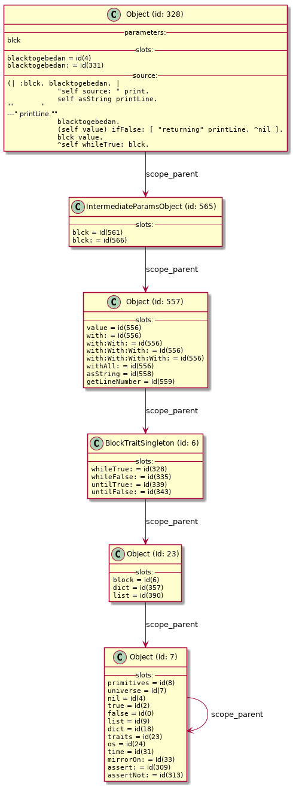
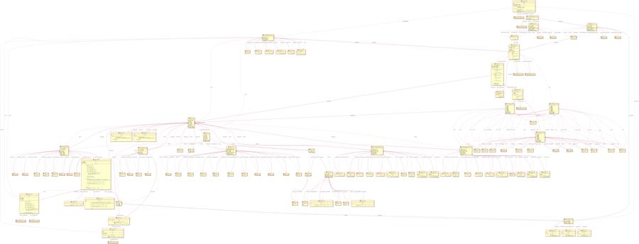
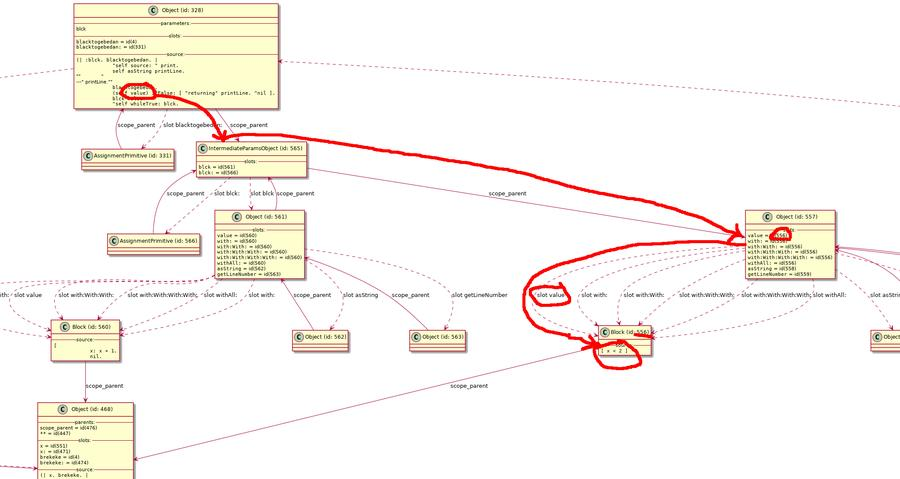

![](data:image/svg+xml,%3Csvg%20xmlns%3D%22http%3A//www.w3.org/2000/svg%22%20viewBox%3D%220%20-0.2%2011%2012.4%22%3E%0A%20%20%3Cdefs%3E%0A%20%20%20%20%3CclipPath%20id%3D%22cloth-tag%22%3E%3Cpolygon%20points%3D%220%2C0.40%200.5%2C0.04%201%2C0.70%201.5%2C0.15%202%2C0.52%202.5%2C0.17%203%2C0.54%203.5%2C0.55%204%2C0.18%204.5%2C0.49%205%2C0.20%205.5%2C0.02%206%2C0.38%206.5%2C0.77%207%2C0.16%207.5%2C0.66%208%2C0.07%208.5%2C0.06%209%2C0.54%209.5%2C0.02%2010%2C0.80%2010.5%2C0.62%2011%2C0.64%2011%2C11.57%2010.5%2C11.86%2010%2C11.33%209.5%2C11.31%209%2C11.41%208.5%2C11.59%208%2C11.51%207.5%2C11.23%207%2C11.46%206.5%2C11.29%206%2C11.79%205.5%2C11.50%205%2C11.77%204.5%2C11.26%204%2C11.42%203.5%2C11.69%203%2C11.88%202.5%2C11.82%202%2C11.80%201.5%2C11.41%201%2C11.50%200.5%2C11.67%200%2C11.68%22/%3E%3C/clipPath%3E%0A%20%20%20%20%3ClinearGradient%20id%3D%22dye-tag%22%20x1%3D%220%22%20y1%3D%220%22%20x2%3D%220.3%22%20y2%3D%221%22%3E%0A%20%20%20%20%20%20%3Cstop%20offset%3D%220%22%20stop-color%3D%22%23a64a26%22/%3E%0A%20%20%20%20%20%20%3Cstop%20offset%3D%221%22%20stop-color%3D%22%238d391b%22/%3E%0A%20%20%20%20%3C/linearGradient%3E%0A%20%20%3C/defs%3E%0A%20%20%3Cg%20clip-path%3D%22url%28%23cloth-tag%29%22%3E%0A%20%20%20%20%3Crect%20width%3D%2211%22%20height%3D%2212%22%20fill%3D%22url%28%23dye-tag%29%22/%3E%0A%20%20%20%20%3Cg%20fill%3D%22%23fffaf2%22%3E%3Crect%20x%3D%220.45%22%20y%3D%220%22%20width%3D%220.35%22%20height%3D%2212%22/%3E%3Crect%20x%3D%221.1%22%20y%3D%220%22%20width%3D%220.2%22%20height%3D%2212%22/%3E%3Crect%20x%3D%2210.2%22%20y%3D%220%22%20width%3D%220.35%22%20height%3D%2212%22/%3E%3Crect%20x%3D%229.7%22%20y%3D%220%22%20width%3D%220.2%22%20height%3D%2212%22/%3E%3C/g%3E%0A%20%20%20%20%3Cg%20fill%3D%22%23fff1e0%22%20shape-rendering%3D%22crispEdges%22%3E%3Crect%20x%3D%222%22%20y%3D%222.5%22%20width%3D%221%22%20height%3D%221%22/%3E%3Crect%20x%3D%223%22%20y%3D%222.5%22%20width%3D%221%22%20height%3D%221%22/%3E%3Crect%20x%3D%224%22%20y%3D%222.5%22%20width%3D%221%22%20height%3D%221%22/%3E%3Crect%20x%3D%222%22%20y%3D%223.5%22%20width%3D%221%22%20height%3D%221%22/%3E%3Crect%20x%3D%223%22%20y%3D%223.5%22%20width%3D%221%22%20height%3D%221%22/%3E%3Crect%20x%3D%222%22%20y%3D%224.5%22%20width%3D%221%22%20height%3D%221%22/%3E%3Crect%20x%3D%226%22%20y%3D%222.5%22%20width%3D%221%22%20height%3D%221%22/%3E%3Crect%20x%3D%227%22%20y%3D%222.5%22%20width%3D%221%22%20height%3D%221%22/%3E%3Crect%20x%3D%228%22%20y%3D%222.5%22%20width%3D%221%22%20height%3D%221%22/%3E%3Crect%20x%3D%227%22%20y%3D%223.5%22%20width%3D%221%22%20height%3D%221%22/%3E%3Crect%20x%3D%228%22%20y%3D%223.5%22%20width%3D%221%22%20height%3D%221%22/%3E%3Crect%20x%3D%228%22%20y%3D%224.5%22%20width%3D%221%22%20height%3D%221%22/%3E%3Crect%20x%3D%222%22%20y%3D%226.5%22%20width%3D%221%22%20height%3D%221%22/%3E%3Crect%20x%3D%224%22%20y%3D%226.5%22%20width%3D%221%22%20height%3D%221%22/%3E%3Crect%20x%3D%222%22%20y%3D%227.5%22%20width%3D%221%22%20height%3D%221%22/%3E%3Crect%20x%3D%224%22%20y%3D%227.5%22%20width%3D%221%22%20height%3D%221%22/%3E%3Crect%20x%3D%222%22%20y%3D%228.5%22%20width%3D%221%22%20height%3D%221%22/%3E%3Crect%20x%3D%224%22%20y%3D%228.5%22%20width%3D%221%22%20height%3D%221%22/%3E%3Crect%20x%3D%226%22%20y%3D%226.5%22%20width%3D%221%22%20height%3D%221%22/%3E%3Crect%20x%3D%228%22%20y%3D%226.5%22%20width%3D%221%22%20height%3D%221%22/%3E%3Crect%20x%3D%226%22%20y%3D%227.5%22%20width%3D%221%22%20height%3D%221%22/%3E%3Crect%20x%3D%228%22%20y%3D%227.5%22%20width%3D%221%22%20height%3D%221%22/%3E%3Crect%20x%3D%226%22%20y%3D%228.5%22%20width%3D%221%22%20height%3D%221%22/%3E%3Crect%20x%3D%228%22%20y%3D%228.5%22%20width%3D%221%22%20height%3D%221%22/%3E%3C/g%3E%0A%20%20%3C/g%3E%0A%3C/svg%3E) Unbounded battle in multiple dimensions
Unbounded battle in multiple dimensions![](data:image/svg+xml,%3Csvg%20xmlns%3D%22http%3A//www.w3.org/2000/svg%22%20viewBox%3D%220%20-0.2%2011%2012.4%22%3E%0A%20%20%3Cdefs%3E%0A%20%20%20%20%3CclipPath%20id%3D%22cloth-tag%22%3E%3Cpolygon%20points%3D%220%2C0.48%200.5%2C0.35%201%2C0.38%201.5%2C0.66%202%2C0.56%202.5%2C0.18%203%2C0.37%203.5%2C0.07%204%2C0.55%204.5%2C0.78%205%2C0.79%205.5%2C0.73%206%2C0.03%206.5%2C0.22%207%2C0.11%207.5%2C0.54%208%2C0.52%208.5%2C0.19%209%2C0.05%209.5%2C0.43%2010%2C0.75%2010.5%2C0.34%2011%2C0.44%2011%2C11.43%2010.5%2C11.91%2010%2C11.92%209.5%2C11.61%209%2C11.29%208.5%2C11.61%208%2C11.88%207.5%2C11.29%207%2C11.80%206.5%2C11.32%206%2C11.93%205.5%2C11.73%205%2C11.59%204.5%2C11.50%204%2C11.72%203.5%2C11.82%203%2C11.65%202.5%2C11.86%202%2C11.29%201.5%2C11.74%201%2C11.96%200.5%2C11.56%200%2C11.54%22/%3E%3C/clipPath%3E%0A%20%20%20%20%3ClinearGradient%20id%3D%22dye-tag%22%20x1%3D%220%22%20y1%3D%220%22%20x2%3D%220.3%22%20y2%3D%221%22%3E%0A%20%20%20%20%20%20%3Cstop%20offset%3D%220%22%20stop-color%3D%22%23a64a26%22/%3E%0A%20%20%20%20%20%20%3Cstop%20offset%3D%221%22%20stop-color%3D%22%238d391b%22/%3E%0A%20%20%20%20%3C/linearGradient%3E%0A%20%20%3C/defs%3E%0A%20%20%3Cg%20clip-path%3D%22url%28%23cloth-tag%29%22%3E%0A%20%20%20%20%3Crect%20width%3D%2211%22%20height%3D%2212%22%20fill%3D%22url%28%23dye-tag%29%22/%3E%0A%20%20%20%20%3Cg%20fill%3D%22%23fffaf2%22%3E%3Crect%20x%3D%220.45%22%20y%3D%220%22%20width%3D%220.35%22%20height%3D%2212%22/%3E%3Crect%20x%3D%221.1%22%20y%3D%220%22%20width%3D%220.2%22%20height%3D%2212%22/%3E%3Crect%20x%3D%2210.2%22%20y%3D%220%22%20width%3D%220.35%22%20height%3D%2212%22/%3E%3Crect%20x%3D%229.7%22%20y%3D%220%22%20width%3D%220.2%22%20height%3D%2212%22/%3E%3C/g%3E%0A%20%20%20%20%3Cg%20fill%3D%22%23fff1e0%22%20shape-rendering%3D%22crispEdges%22%3E%3Crect%20x%3D%222%22%20y%3D%222.5%22%20width%3D%221%22%20height%3D%221%22/%3E%3Crect%20x%3D%223%22%20y%3D%222.5%22%20width%3D%221%22%20height%3D%221%22/%3E%3Crect%20x%3D%224%22%20y%3D%222.5%22%20width%3D%221%22%20height%3D%221%22/%3E%3Crect%20x%3D%222%22%20y%3D%223.5%22%20width%3D%221%22%20height%3D%221%22/%3E%3Crect%20x%3D%224%22%20y%3D%223.5%22%20width%3D%221%22%20height%3D%221%22/%3E%3Crect%20x%3D%224%22%20y%3D%224.5%22%20width%3D%221%22%20height%3D%221%22/%3E%3Crect%20x%3D%226%22%20y%3D%222.5%22%20width%3D%221%22%20height%3D%221%22/%3E%3Crect%20x%3D%227%22%20y%3D%222.5%22%20width%3D%221%22%20height%3D%221%22/%3E%3Crect%20x%3D%228%22%20y%3D%222.5%22%20width%3D%221%22%20height%3D%221%22/%3E%3Crect%20x%3D%226%22%20y%3D%223.5%22%20width%3D%221%22%20height%3D%221%22/%3E%3Crect%20x%3D%228%22%20y%3D%223.5%22%20width%3D%221%22%20height%3D%221%22/%3E%3Crect%20x%3D%226%22%20y%3D%224.5%22%20width%3D%221%22%20height%3D%221%22/%3E%3Crect%20x%3D%223%22%20y%3D%226.5%22%20width%3D%221%22%20height%3D%221%22/%3E%3Crect%20x%3D%224%22%20y%3D%226.5%22%20width%3D%221%22%20height%3D%221%22/%3E%3Crect%20x%3D%224%22%20y%3D%227.5%22%20width%3D%221%22%20height%3D%221%22/%3E%3Crect%20x%3D%222%22%20y%3D%228.5%22%20width%3D%221%22%20height%3D%221%22/%3E%3Crect%20x%3D%223%22%20y%3D%228.5%22%20width%3D%221%22%20height%3D%221%22/%3E%3Crect%20x%3D%224%22%20y%3D%228.5%22%20width%3D%221%22%20height%3D%221%22/%3E%3Crect%20x%3D%226%22%20y%3D%226.5%22%20width%3D%221%22%20height%3D%221%22/%3E%3Crect%20x%3D%227%22%20y%3D%226.5%22%20width%3D%221%22%20height%3D%221%22/%3E%3Crect%20x%3D%226%22%20y%3D%227.5%22%20width%3D%221%22%20height%3D%221%22/%3E%3Crect%20x%3D%226%22%20y%3D%228.5%22%20width%3D%221%22%20height%3D%221%22/%3E%3Crect%20x%3D%227%22%20y%3D%228.5%22%20width%3D%221%22%20height%3D%221%22/%3E%3Crect%20x%3D%228%22%20y%3D%228.5%22%20width%3D%221%22%20height%3D%221%22/%3E%3C/g%3E%0A%20%20%3C/g%3E%0A%3C/svg%3E) Lessons learned from games
Lessons learned from games![](data:image/svg+xml,%3Csvg%20xmlns%3D%22http%3A//www.w3.org/2000/svg%22%20viewBox%3D%220%20-0.2%2011%2012.4%22%3E%0A%20%20%3Cdefs%3E%0A%20%20%20%20%3CclipPath%20id%3D%22cloth-tag%22%3E%3Cpolygon%20points%3D%220%2C0.27%200.5%2C0.42%201%2C0.16%201.5%2C0.15%202%2C0.51%202.5%2C0.55%203%2C0.54%203.5%2C0.29%204%2C0.65%204.5%2C0.66%205%2C0.68%205.5%2C0.33%206%2C0.26%206.5%2C0.33%207%2C0.30%207.5%2C0.17%208%2C0.30%208.5%2C0.78%209%2C0.45%209.5%2C0.41%2010%2C0.42%2010.5%2C0.76%2011%2C0.18%2011%2C11.82%2010.5%2C11.62%2010%2C11.83%209.5%2C11.66%209%2C11.86%208.5%2C11.69%208%2C11.70%207.5%2C11.49%207%2C11.20%206.5%2C11.77%206%2C11.82%205.5%2C11.21%205%2C11.97%204.5%2C11.66%204%2C11.54%203.5%2C11.51%203%2C11.35%202.5%2C11.86%202%2C11.63%201.5%2C11.35%201%2C11.96%200.5%2C11.88%200%2C11.94%22/%3E%3C/clipPath%3E%0A%20%20%20%20%3ClinearGradient%20id%3D%22dye-tag%22%20x1%3D%220%22%20y1%3D%220%22%20x2%3D%220.3%22%20y2%3D%221%22%3E%0A%20%20%20%20%20%20%3Cstop%20offset%3D%220%22%20stop-color%3D%22%23a64a26%22/%3E%0A%20%20%20%20%20%20%3Cstop%20offset%3D%221%22%20stop-color%3D%22%238d391b%22/%3E%0A%20%20%20%20%3C/linearGradient%3E%0A%20%20%3C/defs%3E%0A%20%20%3Cg%20clip-path%3D%22url%28%23cloth-tag%29%22%3E%0A%20%20%20%20%3Crect%20width%3D%2211%22%20height%3D%2212%22%20fill%3D%22url%28%23dye-tag%29%22/%3E%0A%20%20%20%20%3Cg%20fill%3D%22%23fffaf2%22%3E%3Crect%20x%3D%220.45%22%20y%3D%220%22%20width%3D%220.35%22%20height%3D%2212%22/%3E%3Crect%20x%3D%221.1%22%20y%3D%220%22%20width%3D%220.2%22%20height%3D%2212%22/%3E%3Crect%20x%3D%2210.2%22%20y%3D%220%22%20width%3D%220.35%22%20height%3D%2212%22/%3E%3Crect%20x%3D%229.7%22%20y%3D%220%22%20width%3D%220.2%22%20height%3D%2212%22/%3E%3C/g%3E%0A%20%20%20%20%3Cg%20fill%3D%22%23fff1e0%22%20shape-rendering%3D%22crispEdges%22%3E%3Crect%20x%3D%222%22%20y%3D%222.5%22%20width%3D%221%22%20height%3D%221%22/%3E%3Crect%20x%3D%223%22%20y%3D%222.5%22%20width%3D%221%22%20height%3D%221%22/%3E%3Crect%20x%3D%224%22%20y%3D%222.5%22%20width%3D%221%22%20height%3D%221%22/%3E%3Crect%20x%3D%224%22%20y%3D%223.5%22%20width%3D%221%22%20height%3D%221%22/%3E%3Crect%20x%3D%224%22%20y%3D%224.5%22%20width%3D%221%22%20height%3D%221%22/%3E%3Crect%20x%3D%228%22%20y%3D%222.5%22%20width%3D%221%22%20height%3D%221%22/%3E%3Crect%20x%3D%226%22%20y%3D%224.5%22%20width%3D%221%22%20height%3D%221%22/%3E%3Crect%20x%3D%227%22%20y%3D%224.5%22%20width%3D%221%22%20height%3D%221%22/%3E%3Crect%20x%3D%228%22%20y%3D%224.5%22%20width%3D%221%22%20height%3D%221%22/%3E%3Crect%20x%3D%224%22%20y%3D%226.5%22%20width%3D%221%22%20height%3D%221%22/%3E%3Crect%20x%3D%224%22%20y%3D%227.5%22%20width%3D%221%22%20height%3D%221%22/%3E%3Crect%20x%3D%222%22%20y%3D%228.5%22%20width%3D%221%22%20height%3D%221%22/%3E%3Crect%20x%3D%223%22%20y%3D%228.5%22%20width%3D%221%22%20height%3D%221%22/%3E%3Crect%20x%3D%224%22%20y%3D%228.5%22%20width%3D%221%22%20height%3D%221%22/%3E%3Crect%20x%3D%226%22%20y%3D%226.5%22%20width%3D%221%22%20height%3D%221%22/%3E%3Crect%20x%3D%227%22%20y%3D%226.5%22%20width%3D%221%22%20height%3D%221%22/%3E%3Crect%20x%3D%228%22%20y%3D%226.5%22%20width%3D%221%22%20height%3D%221%22/%3E%3Crect%20x%3D%228%22%20y%3D%228.5%22%20width%3D%221%22%20height%3D%221%22/%3E%3C/g%3E%0A%20%20%3C/g%3E%0A%3C/svg%3E) Prusa MK4 upgrade
Prusa MK4 upgrade![](data:image/svg+xml,%3Csvg%20xmlns%3D%22http%3A//www.w3.org/2000/svg%22%20viewBox%3D%220%20-0.2%2011%2012.4%22%3E%0A%20%20%3Cdefs%3E%0A%20%20%20%20%3CclipPath%20id%3D%22cloth-tag%22%3E%3Cpolygon%20points%3D%220%2C0.03%200.5%2C0.66%201%2C0.59%201.5%2C0.10%202%2C0.59%202.5%2C0.38%203%2C0.05%203.5%2C0.79%204%2C0.77%204.5%2C0.58%205%2C0.02%205.5%2C0.33%206%2C0.13%206.5%2C0.36%207%2C0.77%207.5%2C0.42%208%2C0.02%208.5%2C0.79%209%2C0.29%209.5%2C0.11%2010%2C0.49%2010.5%2C0.72%2011%2C0.58%2011%2C11.91%2010.5%2C11.62%2010%2C12.00%209.5%2C11.25%209%2C11.58%208.5%2C11.99%208%2C11.92%207.5%2C11.31%207%2C11.30%206.5%2C11.78%206%2C11.36%205.5%2C11.31%205%2C11.27%204.5%2C11.93%204%2C11.81%203.5%2C11.99%203%2C11.54%202.5%2C11.22%202%2C11.68%201.5%2C11.75%201%2C11.78%200.5%2C11.44%200%2C11.51%22/%3E%3C/clipPath%3E%0A%20%20%20%20%3ClinearGradient%20id%3D%22dye-tag%22%20x1%3D%220%22%20y1%3D%220%22%20x2%3D%220.3%22%20y2%3D%221%22%3E%0A%20%20%20%20%20%20%3Cstop%20offset%3D%220%22%20stop-color%3D%22%23a64a26%22/%3E%0A%20%20%20%20%20%20%3Cstop%20offset%3D%221%22%20stop-color%3D%22%238d391b%22/%3E%0A%20%20%20%20%3C/linearGradient%3E%0A%20%20%3C/defs%3E%0A%20%20%3Cg%20clip-path%3D%22url%28%23cloth-tag%29%22%3E%0A%20%20%20%20%3Crect%20width%3D%2211%22%20height%3D%2212%22%20fill%3D%22url%28%23dye-tag%29%22/%3E%0A%20%20%20%20%3Cg%20fill%3D%22%23fffaf2%22%3E%3Crect%20x%3D%220.45%22%20y%3D%220%22%20width%3D%220.35%22%20height%3D%2212%22/%3E%3Crect%20x%3D%221.1%22%20y%3D%220%22%20width%3D%220.2%22%20height%3D%2212%22/%3E%3Crect%20x%3D%2210.2%22%20y%3D%220%22%20width%3D%220.35%22%20height%3D%2212%22/%3E%3Crect%20x%3D%229.7%22%20y%3D%220%22%20width%3D%220.2%22%20height%3D%2212%22/%3E%3C/g%3E%0A%20%20%20%20%3Cg%20fill%3D%22%23fff1e0%22%20shape-rendering%3D%22crispEdges%22%3E%3Crect%20x%3D%222%22%20y%3D%222.5%22%20width%3D%221%22%20height%3D%221%22/%3E%3Crect%20x%3D%223%22%20y%3D%222.5%22%20width%3D%221%22%20height%3D%221%22/%3E%3Crect%20x%3D%224%22%20y%3D%222.5%22%20width%3D%221%22%20height%3D%221%22/%3E%3Crect%20x%3D%224%22%20y%3D%223.5%22%20width%3D%221%22%20height%3D%221%22/%3E%3Crect%20x%3D%222%22%20y%3D%224.5%22%20width%3D%221%22%20height%3D%221%22/%3E%3Crect%20x%3D%224%22%20y%3D%224.5%22%20width%3D%221%22%20height%3D%221%22/%3E%3Crect%20x%3D%228%22%20y%3D%222.5%22%20width%3D%221%22%20height%3D%221%22/%3E%3Crect%20x%3D%226%22%20y%3D%223.5%22%20width%3D%221%22%20height%3D%221%22/%3E%3Crect%20x%3D%228%22%20y%3D%223.5%22%20width%3D%221%22%20height%3D%221%22/%3E%3Crect%20x%3D%226%22%20y%3D%224.5%22%20width%3D%221%22%20height%3D%221%22/%3E%3Crect%20x%3D%227%22%20y%3D%224.5%22%20width%3D%221%22%20height%3D%221%22/%3E%3Crect%20x%3D%228%22%20y%3D%224.5%22%20width%3D%221%22%20height%3D%221%22/%3E%3Crect%20x%3D%222%22%20y%3D%226.5%22%20width%3D%221%22%20height%3D%221%22/%3E%3Crect%20x%3D%224%22%20y%3D%226.5%22%20width%3D%221%22%20height%3D%221%22/%3E%3Crect%20x%3D%224%22%20y%3D%227.5%22%20width%3D%221%22%20height%3D%221%22/%3E%3Crect%20x%3D%222%22%20y%3D%228.5%22%20width%3D%221%22%20height%3D%221%22/%3E%3Crect%20x%3D%223%22%20y%3D%228.5%22%20width%3D%221%22%20height%3D%221%22/%3E%3Crect%20x%3D%224%22%20y%3D%228.5%22%20width%3D%221%22%20height%3D%221%22/%3E%3Crect%20x%3D%226%22%20y%3D%226.5%22%20width%3D%221%22%20height%3D%221%22/%3E%3Crect%20x%3D%227%22%20y%3D%226.5%22%20width%3D%221%22%20height%3D%221%22/%3E%3Crect%20x%3D%228%22%20y%3D%226.5%22%20width%3D%221%22%20height%3D%221%22/%3E%3Crect%20x%3D%226%22%20y%3D%227.5%22%20width%3D%221%22%20height%3D%221%22/%3E%3Crect%20x%3D%228%22%20y%3D%227.5%22%20width%3D%221%22%20height%3D%221%22/%3E%3Crect%20x%3D%228%22%20y%3D%228.5%22%20width%3D%221%22%20height%3D%221%22/%3E%3C/g%3E%0A%20%20%3C/g%3E%0A%3C/svg%3E) HobbyCell
HobbyCell![](data:image/svg+xml,%3Csvg%20xmlns%3D%22http%3A//www.w3.org/2000/svg%22%20viewBox%3D%220%20-0.2%2011%2012.4%22%3E%0A%20%20%3Cdefs%3E%0A%20%20%20%20%3CclipPath%20id%3D%22cloth-tag%22%3E%3Cpolygon%20points%3D%220%2C0.11%200.5%2C0.62%201%2C0.07%201.5%2C0.16%202%2C0.30%202.5%2C0.42%203%2C0.56%203.5%2C0.74%204%2C0.01%204.5%2C0.52%205%2C0.33%205.5%2C0.54%206%2C0.68%206.5%2C0.52%207%2C0.70%207.5%2C0.47%208%2C0.19%208.5%2C0.72%209%2C0.59%209.5%2C0.70%2010%2C0.63%2010.5%2C0.11%2011%2C0.46%2011%2C11.28%2010.5%2C11.44%2010%2C11.40%209.5%2C11.39%209%2C11.34%208.5%2C11.25%208%2C11.99%207.5%2C11.29%207%2C11.23%206.5%2C11.48%206%2C11.78%205.5%2C11.37%205%2C11.48%204.5%2C11.93%204%2C11.97%203.5%2C11.74%203%2C11.84%202.5%2C11.22%202%2C11.54%201.5%2C11.89%201%2C11.38%200.5%2C11.73%200%2C11.24%22/%3E%3C/clipPath%3E%0A%20%20%20%20%3ClinearGradient%20id%3D%22dye-tag%22%20x1%3D%220%22%20y1%3D%220%22%20x2%3D%220.3%22%20y2%3D%221%22%3E%0A%20%20%20%20%20%20%3Cstop%20offset%3D%220%22%20stop-color%3D%22%23a64a26%22/%3E%0A%20%20%20%20%20%20%3Cstop%20offset%3D%221%22%20stop-color%3D%22%238d391b%22/%3E%0A%20%20%20%20%3C/linearGradient%3E%0A%20%20%3C/defs%3E%0A%20%20%3Cg%20clip-path%3D%22url%28%23cloth-tag%29%22%3E%0A%20%20%20%20%3Crect%20width%3D%2211%22%20height%3D%2212%22%20fill%3D%22url%28%23dye-tag%29%22/%3E%0A%20%20%20%20%3Cg%20fill%3D%22%23fffaf2%22%3E%3Crect%20x%3D%220.45%22%20y%3D%220%22%20width%3D%220.35%22%20height%3D%2212%22/%3E%3Crect%20x%3D%221.1%22%20y%3D%220%22%20width%3D%220.2%22%20height%3D%2212%22/%3E%3Crect%20x%3D%2210.2%22%20y%3D%220%22%20width%3D%220.35%22%20height%3D%2212%22/%3E%3Crect%20x%3D%229.7%22%20y%3D%220%22%20width%3D%220.2%22%20height%3D%2212%22/%3E%3C/g%3E%0A%20%20%20%20%3Cg%20fill%3D%22%23fff1e0%22%20shape-rendering%3D%22crispEdges%22%3E%3Crect%20x%3D%222%22%20y%3D%222.5%22%20width%3D%221%22%20height%3D%221%22/%3E%3Crect%20x%3D%224%22%20y%3D%222.5%22%20width%3D%221%22%20height%3D%221%22/%3E%3Crect%20x%3D%222%22%20y%3D%223.5%22%20width%3D%221%22%20height%3D%221%22/%3E%3Crect%20x%3D%222%22%20y%3D%224.5%22%20width%3D%221%22%20height%3D%221%22/%3E%3Crect%20x%3D%223%22%20y%3D%224.5%22%20width%3D%221%22%20height%3D%221%22/%3E%3Crect%20x%3D%224%22%20y%3D%224.5%22%20width%3D%221%22%20height%3D%221%22/%3E%3Crect%20x%3D%226%22%20y%3D%222.5%22%20width%3D%221%22%20height%3D%221%22/%3E%3Crect%20x%3D%227%22%20y%3D%222.5%22%20width%3D%221%22%20height%3D%221%22/%3E%3Crect%20x%3D%228%22%20y%3D%222.5%22%20width%3D%221%22%20height%3D%221%22/%3E%3Crect%20x%3D%228%22%20y%3D%223.5%22%20width%3D%221%22%20height%3D%221%22/%3E%3Crect%20x%3D%226%22%20y%3D%224.5%22%20width%3D%221%22%20height%3D%221%22/%3E%3Crect%20x%3D%227%22%20y%3D%224.5%22%20width%3D%221%22%20height%3D%221%22/%3E%3Crect%20x%3D%228%22%20y%3D%224.5%22%20width%3D%221%22%20height%3D%221%22/%3E%3Crect%20x%3D%222%22%20y%3D%226.5%22%20width%3D%221%22%20height%3D%221%22/%3E%3Crect%20x%3D%223%22%20y%3D%226.5%22%20width%3D%221%22%20height%3D%221%22/%3E%3Crect%20x%3D%224%22%20y%3D%226.5%22%20width%3D%221%22%20height%3D%221%22/%3E%3Crect%20x%3D%222%22%20y%3D%227.5%22%20width%3D%221%22%20height%3D%221%22/%3E%3Crect%20x%3D%222%22%20y%3D%228.5%22%20width%3D%221%22%20height%3D%221%22/%3E%3Crect%20x%3D%224%22%20y%3D%228.5%22%20width%3D%221%22%20height%3D%221%22/%3E%3Crect%20x%3D%226%22%20y%3D%226.5%22%20width%3D%221%22%20height%3D%221%22/%3E%3Crect%20x%3D%227%22%20y%3D%226.5%22%20width%3D%221%22%20height%3D%221%22/%3E%3Crect%20x%3D%228%22%20y%3D%226.5%22%20width%3D%221%22%20height%3D%221%22/%3E%3Crect%20x%3D%228%22%20y%3D%227.5%22%20width%3D%221%22%20height%3D%221%22/%3E%3Crect%20x%3D%226%22%20y%3D%228.5%22%20width%3D%221%22%20height%3D%221%22/%3E%3Crect%20x%3D%227%22%20y%3D%228.5%22%20width%3D%221%22%20height%3D%221%22/%3E%3Crect%20x%3D%228%22%20y%3D%228.5%22%20width%3D%221%22%20height%3D%221%22/%3E%3C/g%3E%0A%20%20%3C/g%3E%0A%3C/svg%3E) CaptchaCoin
CaptchaCoin![](data:image/svg+xml,%3Csvg%20xmlns%3D%22http%3A//www.w3.org/2000/svg%22%20viewBox%3D%220%20-0.2%2011%2012.4%22%3E%0A%20%20%3Cdefs%3E%0A%20%20%20%20%3CclipPath%20id%3D%22cloth-tag%22%3E%3Cpolygon%20points%3D%220%2C0.08%200.5%2C0.01%201%2C0.65%201.5%2C0.33%202%2C0.78%202.5%2C0.47%203%2C0.22%203.5%2C0.78%204%2C0.77%204.5%2C0.40%205%2C0.34%205.5%2C0.52%206%2C0.12%206.5%2C0.32%207%2C0.53%207.5%2C0.31%208%2C0.36%208.5%2C0.65%209%2C0.13%209.5%2C0.36%2010%2C0.66%2010.5%2C0.41%2011%2C0.08%2011%2C11.47%2010.5%2C11.50%2010%2C11.29%209.5%2C11.56%209%2C11.41%208.5%2C11.77%208%2C11.98%207.5%2C11.88%207%2C11.45%206.5%2C11.77%206%2C11.36%205.5%2C11.94%205%2C11.62%204.5%2C11.48%204%2C11.87%203.5%2C11.22%203%2C11.41%202.5%2C11.46%202%2C11.74%201.5%2C11.73%201%2C11.25%200.5%2C11.47%200%2C11.21%22/%3E%3C/clipPath%3E%0A%20%20%20%20%3ClinearGradient%20id%3D%22dye-tag%22%20x1%3D%220%22%20y1%3D%220%22%20x2%3D%220.3%22%20y2%3D%221%22%3E%0A%20%20%20%20%20%20%3Cstop%20offset%3D%220%22%20stop-color%3D%22%23a64a26%22/%3E%0A%20%20%20%20%20%20%3Cstop%20offset%3D%221%22%20stop-color%3D%22%238d391b%22/%3E%0A%20%20%20%20%3C/linearGradient%3E%0A%20%20%3C/defs%3E%0A%20%20%3Cg%20clip-path%3D%22url%28%23cloth-tag%29%22%3E%0A%20%20%20%20%3Crect%20width%3D%2211%22%20height%3D%2212%22%20fill%3D%22url%28%23dye-tag%29%22/%3E%0A%20%20%20%20%3Cg%20fill%3D%22%23fffaf2%22%3E%3Crect%20x%3D%220.45%22%20y%3D%220%22%20width%3D%220.35%22%20height%3D%2212%22/%3E%3Crect%20x%3D%221.1%22%20y%3D%220%22%20width%3D%220.2%22%20height%3D%2212%22/%3E%3Crect%20x%3D%2210.2%22%20y%3D%220%22%20width%3D%220.35%22%20height%3D%2212%22/%3E%3Crect%20x%3D%229.7%22%20y%3D%220%22%20width%3D%220.2%22%20height%3D%2212%22/%3E%3C/g%3E%0A%20%20%20%20%3Cg%20fill%3D%22%23fff1e0%22%20shape-rendering%3D%22crispEdges%22%3E%3Crect%20x%3D%222%22%20y%3D%222.5%22%20width%3D%221%22%20height%3D%221%22/%3E%3Crect%20x%3D%222%22%20y%3D%223.5%22%20width%3D%221%22%20height%3D%221%22/%3E%3Crect%20x%3D%224%22%20y%3D%223.5%22%20width%3D%221%22%20height%3D%221%22/%3E%3Crect%20x%3D%222%22%20y%3D%224.5%22%20width%3D%221%22%20height%3D%221%22/%3E%3Crect%20x%3D%228%22%20y%3D%222.5%22%20width%3D%221%22%20height%3D%221%22/%3E%3Crect%20x%3D%226%22%20y%3D%223.5%22%20width%3D%221%22%20height%3D%221%22/%3E%3Crect%20x%3D%228%22%20y%3D%223.5%22%20width%3D%221%22%20height%3D%221%22/%3E%3Crect%20x%3D%226%22%20y%3D%224.5%22%20width%3D%221%22%20height%3D%221%22/%3E%3Crect%20x%3D%227%22%20y%3D%224.5%22%20width%3D%221%22%20height%3D%221%22/%3E%3Crect%20x%3D%228%22%20y%3D%224.5%22%20width%3D%221%22%20height%3D%221%22/%3E%3Crect%20x%3D%222%22%20y%3D%226.5%22%20width%3D%221%22%20height%3D%221%22/%3E%3Crect%20x%3D%222%22%20y%3D%227.5%22%20width%3D%221%22%20height%3D%221%22/%3E%3Crect%20x%3D%224%22%20y%3D%227.5%22%20width%3D%221%22%20height%3D%221%22/%3E%3Crect%20x%3D%222%22%20y%3D%228.5%22%20width%3D%221%22%20height%3D%221%22/%3E%3Crect%20x%3D%226%22%20y%3D%226.5%22%20width%3D%221%22%20height%3D%221%22/%3E%3Crect%20x%3D%227%22%20y%3D%226.5%22%20width%3D%221%22%20height%3D%221%22/%3E%3Crect%20x%3D%228%22%20y%3D%226.5%22%20width%3D%221%22%20height%3D%221%22/%3E%3Crect%20x%3D%226%22%20y%3D%227.5%22%20width%3D%221%22%20height%3D%221%22/%3E%3Crect%20x%3D%228%22%20y%3D%227.5%22%20width%3D%221%22%20height%3D%221%22/%3E%3Crect%20x%3D%228%22%20y%3D%228.5%22%20width%3D%221%22%20height%3D%221%22/%3E%3C/g%3E%0A%20%20%3C/g%3E%0A%3C/svg%3E) SolarPi experiment 2: Finally something that works
SolarPi experiment 2: Finally something that works![](data:image/svg+xml,%3Csvg%20xmlns%3D%22http%3A//www.w3.org/2000/svg%22%20viewBox%3D%220%20-0.2%2011%2012.4%22%3E%0A%20%20%3Cdefs%3E%0A%20%20%20%20%3CclipPath%20id%3D%22cloth-tag%22%3E%3Cpolygon%20points%3D%220%2C0.11%200.5%2C0.78%201%2C0.26%201.5%2C0.35%202%2C0.16%202.5%2C0.47%203%2C0.19%203.5%2C0.33%204%2C0.60%204.5%2C0.31%205%2C0.01%205.5%2C0.22%206%2C0.78%206.5%2C0.14%207%2C0.05%207.5%2C0.27%208%2C0.28%208.5%2C0.49%209%2C0.52%209.5%2C0.23%2010%2C0.08%2010.5%2C0.10%2011%2C0.74%2011%2C11.87%2010.5%2C11.41%2010%2C11.84%209.5%2C11.69%209%2C11.90%208.5%2C11.43%208%2C11.70%207.5%2C11.21%207%2C11.85%206.5%2C11.88%206%2C11.63%205.5%2C11.51%205%2C11.81%204.5%2C11.31%204%2C11.67%203.5%2C11.60%203%2C11.24%202.5%2C11.29%202%2C11.90%201.5%2C11.27%201%2C11.99%200.5%2C11.37%200%2C11.93%22/%3E%3C/clipPath%3E%0A%20%20%20%20%3ClinearGradient%20id%3D%22dye-tag%22%20x1%3D%220%22%20y1%3D%220%22%20x2%3D%220.3%22%20y2%3D%221%22%3E%0A%20%20%20%20%20%20%3Cstop%20offset%3D%220%22%20stop-color%3D%22%23a64a26%22/%3E%0A%20%20%20%20%20%20%3Cstop%20offset%3D%221%22%20stop-color%3D%22%238d391b%22/%3E%0A%20%20%20%20%3C/linearGradient%3E%0A%20%20%3C/defs%3E%0A%20%20%3Cg%20clip-path%3D%22url%28%23cloth-tag%29%22%3E%0A%20%20%20%20%3Crect%20width%3D%2211%22%20height%3D%2212%22%20fill%3D%22url%28%23dye-tag%29%22/%3E%0A%20%20%20%20%3Cg%20fill%3D%22%23fffaf2%22%3E%3Crect%20x%3D%220.45%22%20y%3D%220%22%20width%3D%220.35%22%20height%3D%2212%22/%3E%3Crect%20x%3D%221.1%22%20y%3D%220%22%20width%3D%220.2%22%20height%3D%2212%22/%3E%3Crect%20x%3D%2210.2%22%20y%3D%220%22%20width%3D%220.35%22%20height%3D%2212%22/%3E%3Crect%20x%3D%229.7%22%20y%3D%220%22%20width%3D%220.2%22%20height%3D%2212%22/%3E%3C/g%3E%0A%20%20%20%20%3Cg%20fill%3D%22%23fff1e0%22%20shape-rendering%3D%22crispEdges%22%3E%3Crect%20x%3D%223%22%20y%3D%222.5%22%20width%3D%221%22%20height%3D%221%22/%3E%3Crect%20x%3D%224%22%20y%3D%222.5%22%20width%3D%221%22%20height%3D%221%22/%3E%3Crect%20x%3D%224%22%20y%3D%223.5%22%20width%3D%221%22%20height%3D%221%22/%3E%3Crect%20x%3D%222%22%20y%3D%224.5%22%20width%3D%221%22%20height%3D%221%22/%3E%3Crect%20x%3D%223%22%20y%3D%224.5%22%20width%3D%221%22%20height%3D%221%22/%3E%3Crect%20x%3D%224%22%20y%3D%224.5%22%20width%3D%221%22%20height%3D%221%22/%3E%3Crect%20x%3D%226%22%20y%3D%222.5%22%20width%3D%221%22%20height%3D%221%22/%3E%3Crect%20x%3D%227%22%20y%3D%222.5%22%20width%3D%221%22%20height%3D%221%22/%3E%3Crect%20x%3D%226%22%20y%3D%223.5%22%20width%3D%221%22%20height%3D%221%22/%3E%3Crect%20x%3D%226%22%20y%3D%224.5%22%20width%3D%221%22%20height%3D%221%22/%3E%3Crect%20x%3D%227%22%20y%3D%224.5%22%20width%3D%221%22%20height%3D%221%22/%3E%3Crect%20x%3D%228%22%20y%3D%224.5%22%20width%3D%221%22%20height%3D%221%22/%3E%3Crect%20x%3D%222%22%20y%3D%226.5%22%20width%3D%221%22%20height%3D%221%22/%3E%3Crect%20x%3D%223%22%20y%3D%226.5%22%20width%3D%221%22%20height%3D%221%22/%3E%3Crect%20x%3D%224%22%20y%3D%226.5%22%20width%3D%221%22%20height%3D%221%22/%3E%3Crect%20x%3D%223%22%20y%3D%228.5%22%20width%3D%221%22%20height%3D%221%22/%3E%3Crect%20x%3D%226%22%20y%3D%226.5%22%20width%3D%221%22%20height%3D%221%22/%3E%3Crect%20x%3D%227%22%20y%3D%226.5%22%20width%3D%221%22%20height%3D%221%22/%3E%3Crect%20x%3D%228%22%20y%3D%226.5%22%20width%3D%221%22%20height%3D%221%22/%3E%3Crect%20x%3D%227%22%20y%3D%228.5%22%20width%3D%221%22%20height%3D%221%22/%3E%3C/g%3E%0A%20%20%3C/g%3E%0A%3C/svg%3E) How to run your own LLM (GPT)
How to run your own LLM (GPT)![](data:image/svg+xml,%3Csvg%20xmlns%3D%22http%3A//www.w3.org/2000/svg%22%20viewBox%3D%220%20-0.2%2011%2012.4%22%3E%0A%20%20%3Cdefs%3E%0A%20%20%20%20%3CclipPath%20id%3D%22cloth-tag%22%3E%3Cpolygon%20points%3D%220%2C0.33%200.5%2C0.33%201%2C0.52%201.5%2C0.54%202%2C0.22%202.5%2C0.41%203%2C0.12%203.5%2C0.66%204%2C0.54%204.5%2C0.06%205%2C0.18%205.5%2C0.35%206%2C0.62%206.5%2C0.56%207%2C0.11%207.5%2C0.01%208%2C0.60%208.5%2C0.18%209%2C0.27%209.5%2C0.56%2010%2C0.49%2010.5%2C0.19%2011%2C0.17%2011%2C11.70%2010.5%2C11.63%2010%2C11.37%209.5%2C11.36%209%2C11.46%208.5%2C11.87%208%2C11.30%207.5%2C11.53%207%2C11.76%206.5%2C11.44%206%2C11.50%205.5%2C11.33%205%2C11.39%204.5%2C11.32%204%2C11.63%203.5%2C11.29%203%2C11.63%202.5%2C11.49%202%2C11.90%201.5%2C11.22%201%2C11.28%200.5%2C11.64%200%2C11.56%22/%3E%3C/clipPath%3E%0A%20%20%20%20%3ClinearGradient%20id%3D%22dye-tag%22%20x1%3D%220%22%20y1%3D%220%22%20x2%3D%220.3%22%20y2%3D%221%22%3E%0A%20%20%20%20%20%20%3Cstop%20offset%3D%220%22%20stop-color%3D%22%23a64a26%22/%3E%0A%20%20%20%20%20%20%3Cstop%20offset%3D%221%22%20stop-color%3D%22%238d391b%22/%3E%0A%20%20%20%20%3C/linearGradient%3E%0A%20%20%3C/defs%3E%0A%20%20%3Cg%20clip-path%3D%22url%28%23cloth-tag%29%22%3E%0A%20%20%20%20%3Crect%20width%3D%2211%22%20height%3D%2212%22%20fill%3D%22url%28%23dye-tag%29%22/%3E%0A%20%20%20%20%3Cg%20fill%3D%22%23fffaf2%22%3E%3Crect%20x%3D%220.45%22%20y%3D%220%22%20width%3D%220.35%22%20height%3D%2212%22/%3E%3Crect%20x%3D%221.1%22%20y%3D%220%22%20width%3D%220.2%22%20height%3D%2212%22/%3E%3Crect%20x%3D%2210.2%22%20y%3D%220%22%20width%3D%220.35%22%20height%3D%2212%22/%3E%3Crect%20x%3D%229.7%22%20y%3D%220%22%20width%3D%220.2%22%20height%3D%2212%22/%3E%3C/g%3E%0A%20%20%20%20%3Cg%20fill%3D%22%23fff1e0%22%20shape-rendering%3D%22crispEdges%22%3E%3Crect%20x%3D%222%22%20y%3D%222.5%22%20width%3D%221%22%20height%3D%221%22/%3E%3Crect%20x%3D%224%22%20y%3D%222.5%22%20width%3D%221%22%20height%3D%221%22/%3E%3Crect%20x%3D%222%22%20y%3D%223.5%22%20width%3D%221%22%20height%3D%221%22/%3E%3Crect%20x%3D%223%22%20y%3D%223.5%22%20width%3D%221%22%20height%3D%221%22/%3E%3Crect%20x%3D%222%22%20y%3D%224.5%22%20width%3D%221%22%20height%3D%221%22/%3E%3Crect%20x%3D%223%22%20y%3D%224.5%22%20width%3D%221%22%20height%3D%221%22/%3E%3Crect%20x%3D%224%22%20y%3D%224.5%22%20width%3D%221%22%20height%3D%221%22/%3E%3Crect%20x%3D%226%22%20y%3D%222.5%22%20width%3D%221%22%20height%3D%221%22/%3E%3Crect%20x%3D%228%22%20y%3D%223.5%22%20width%3D%221%22%20height%3D%221%22/%3E%3Crect%20x%3D%227%22%20y%3D%224.5%22%20width%3D%221%22%20height%3D%221%22/%3E%3Crect%20x%3D%228%22%20y%3D%224.5%22%20width%3D%221%22%20height%3D%221%22/%3E%3Crect%20x%3D%222%22%20y%3D%226.5%22%20width%3D%221%22%20height%3D%221%22/%3E%3Crect%20x%3D%223%22%20y%3D%226.5%22%20width%3D%221%22%20height%3D%221%22/%3E%3Crect%20x%3D%224%22%20y%3D%226.5%22%20width%3D%221%22%20height%3D%221%22/%3E%3Crect%20x%3D%222%22%20y%3D%227.5%22%20width%3D%221%22%20height%3D%221%22/%3E%3Crect%20x%3D%223%22%20y%3D%227.5%22%20width%3D%221%22%20height%3D%221%22/%3E%3Crect%20x%3D%222%22%20y%3D%228.5%22%20width%3D%221%22%20height%3D%221%22/%3E%3Crect%20x%3D%224%22%20y%3D%228.5%22%20width%3D%221%22%20height%3D%221%22/%3E%3Crect%20x%3D%227%22%20y%3D%226.5%22%20width%3D%221%22%20height%3D%221%22/%3E%3Crect%20x%3D%228%22%20y%3D%226.5%22%20width%3D%221%22%20height%3D%221%22/%3E%3Crect%20x%3D%228%22%20y%3D%227.5%22%20width%3D%221%22%20height%3D%221%22/%3E%3Crect%20x%3D%226%22%20y%3D%228.5%22%20width%3D%221%22%20height%3D%221%22/%3E%3C/g%3E%0A%20%20%3C/g%3E%0A%3C/svg%3E) SolarPi experiment 1: The PiJuice Fiasco
SolarPi experiment 1: The PiJuice Fiasco![](data:image/svg+xml,%3Csvg%20xmlns%3D%22http%3A//www.w3.org/2000/svg%22%20viewBox%3D%220%20-0.2%2011%2012.4%22%3E%0A%20%20%3Cdefs%3E%0A%20%20%20%20%3CclipPath%20id%3D%22cloth-tag%22%3E%3Cpolygon%20points%3D%220%2C0.57%200.5%2C0.75%201%2C0.22%201.5%2C0.52%202%2C0.31%202.5%2C0.55%203%2C0.28%203.5%2C0.71%204%2C0.28%204.5%2C0.68%205%2C0.70%205.5%2C0.05%206%2C0.77%206.5%2C0.47%207%2C0.77%207.5%2C0.15%208%2C0.64%208.5%2C0.48%209%2C0.34%209.5%2C0.76%2010%2C0.54%2010.5%2C0.40%2011%2C0.73%2011%2C11.28%2010.5%2C11.46%2010%2C11.90%209.5%2C11.93%209%2C11.82%208.5%2C11.33%208%2C11.70%207.5%2C11.50%207%2C11.41%206.5%2C11.84%206%2C11.37%205.5%2C11.94%205%2C11.81%204.5%2C11.38%204%2C11.31%203.5%2C11.53%203%2C11.99%202.5%2C11.77%202%2C11.82%201.5%2C11.37%201%2C11.56%200.5%2C11.49%200%2C11.56%22/%3E%3C/clipPath%3E%0A%20%20%20%20%3ClinearGradient%20id%3D%22dye-tag%22%20x1%3D%220%22%20y1%3D%220%22%20x2%3D%220.3%22%20y2%3D%221%22%3E%0A%20%20%20%20%20%20%3Cstop%20offset%3D%220%22%20stop-color%3D%22%23fbf3e2%22/%3E%0A%20%20%20%20%20%20%3Cstop%20offset%3D%221%22%20stop-color%3D%22%23eadbb8%22/%3E%0A%20%20%20%20%3C/linearGradient%3E%0A%20%20%3C/defs%3E%0A%20%20%3Cg%20clip-path%3D%22url%28%23cloth-tag%29%22%3E%0A%20%20%20%20%3Crect%20width%3D%2211%22%20height%3D%2212%22%20fill%3D%22url%28%23dye-tag%29%22/%3E%0A%20%20%20%20%3Cg%20fill%3D%22%23c89a3a%22%3E%3Crect%20x%3D%220.45%22%20y%3D%220%22%20width%3D%220.35%22%20height%3D%2212%22/%3E%3Crect%20x%3D%221.1%22%20y%3D%220%22%20width%3D%220.2%22%20height%3D%2212%22/%3E%3Crect%20x%3D%2210.2%22%20y%3D%220%22%20width%3D%220.35%22%20height%3D%2212%22/%3E%3Crect%20x%3D%229.7%22%20y%3D%220%22%20width%3D%220.2%22%20height%3D%2212%22/%3E%3C/g%3E%0A%20%20%20%20%3Cg%20fill%3D%22%23b8862b%22%20shape-rendering%3D%22crispEdges%22%3E%3Crect%20x%3D%222%22%20y%3D%222.5%22%20width%3D%221%22%20height%3D%221%22/%3E%3Crect%20x%3D%224%22%20y%3D%222.5%22%20width%3D%221%22%20height%3D%221%22/%3E%3Crect%20x%3D%223%22%20y%3D%223.5%22%20width%3D%221%22%20height%3D%221%22/%3E%3Crect%20x%3D%224%22%20y%3D%223.5%22%20width%3D%221%22%20height%3D%221%22/%3E%3Crect%20x%3D%222%22%20y%3D%224.5%22%20width%3D%221%22%20height%3D%221%22/%3E%3Crect%20x%3D%223%22%20y%3D%224.5%22%20width%3D%221%22%20height%3D%221%22/%3E%3Crect%20x%3D%224%22%20y%3D%224.5%22%20width%3D%221%22%20height%3D%221%22/%3E%3Crect%20x%3D%226%22%20y%3D%222.5%22%20width%3D%221%22%20height%3D%221%22/%3E%3Crect%20x%3D%228%22%20y%3D%222.5%22%20width%3D%221%22%20height%3D%221%22/%3E%3Crect%20x%3D%226%22%20y%3D%223.5%22%20width%3D%221%22%20height%3D%221%22/%3E%3Crect%20x%3D%228%22%20y%3D%223.5%22%20width%3D%221%22%20height%3D%221%22/%3E%3Crect%20x%3D%226%22%20y%3D%224.5%22%20width%3D%221%22%20height%3D%221%22/%3E%3Crect%20x%3D%227%22%20y%3D%224.5%22%20width%3D%221%22%20height%3D%221%22/%3E%3Crect%20x%3D%228%22%20y%3D%224.5%22%20width%3D%221%22%20height%3D%221%22/%3E%3Crect%20x%3D%222%22%20y%3D%226.5%22%20width%3D%221%22%20height%3D%221%22/%3E%3Crect%20x%3D%223%22%20y%3D%226.5%22%20width%3D%221%22%20height%3D%221%22/%3E%3Crect%20x%3D%224%22%20y%3D%226.5%22%20width%3D%221%22%20height%3D%221%22/%3E%3Crect%20x%3D%223%22%20y%3D%227.5%22%20width%3D%221%22%20height%3D%221%22/%3E%3Crect%20x%3D%224%22%20y%3D%227.5%22%20width%3D%221%22%20height%3D%221%22/%3E%3Crect%20x%3D%222%22%20y%3D%228.5%22%20width%3D%221%22%20height%3D%221%22/%3E%3Crect%20x%3D%224%22%20y%3D%228.5%22%20width%3D%221%22%20height%3D%221%22/%3E%3Crect%20x%3D%226%22%20y%3D%226.5%22%20width%3D%221%22%20height%3D%221%22/%3E%3Crect%20x%3D%227%22%20y%3D%226.5%22%20width%3D%221%22%20height%3D%221%22/%3E%3Crect%20x%3D%228%22%20y%3D%226.5%22%20width%3D%221%22%20height%3D%221%22/%3E%3Crect%20x%3D%226%22%20y%3D%227.5%22%20width%3D%221%22%20height%3D%221%22/%3E%3Crect%20x%3D%228%22%20y%3D%227.5%22%20width%3D%221%22%20height%3D%221%22/%3E%3Crect%20x%3D%226%22%20y%3D%228.5%22%20width%3D%221%22%20height%3D%221%22/%3E%3Crect%20x%3D%228%22%20y%3D%228.5%22%20width%3D%221%22%20height%3D%221%22/%3E%3C/g%3E%0A%20%20%3C/g%3E%0A%3C/svg%3E) Inspiration for objWiki
Inspiration for objWiki![](data:image/svg+xml,%3Csvg%20xmlns%3D%22http%3A//www.w3.org/2000/svg%22%20viewBox%3D%220%20-0.2%2011%2012.4%22%3E%0A%20%20%3Cdefs%3E%0A%20%20%20%20%3CclipPath%20id%3D%22cloth-tag%22%3E%3Cpolygon%20points%3D%220%2C0.12%200.5%2C0.16%201%2C0.68%201.5%2C0.74%202%2C0.60%202.5%2C0.37%203%2C0.74%203.5%2C0.61%204%2C0.04%204.5%2C0.58%205%2C0.66%205.5%2C0.03%206%2C0.61%206.5%2C0.06%207%2C0.57%207.5%2C0.67%208%2C0.72%208.5%2C0.05%209%2C0.43%209.5%2C0.02%2010%2C0.74%2010.5%2C0.34%2011%2C0.27%2011%2C11.86%2010.5%2C11.81%2010%2C11.48%209.5%2C11.76%209%2C11.51%208.5%2C11.38%208%2C11.28%207.5%2C11.47%207%2C11.42%206.5%2C11.29%206%2C11.52%205.5%2C11.43%205%2C11.99%204.5%2C11.56%204%2C11.50%203.5%2C11.69%203%2C11.31%202.5%2C11.42%202%2C11.93%201.5%2C11.84%201%2C11.27%200.5%2C11.81%200%2C11.74%22/%3E%3C/clipPath%3E%0A%20%20%20%20%3ClinearGradient%20id%3D%22dye-tag%22%20x1%3D%220%22%20y1%3D%220%22%20x2%3D%220.3%22%20y2%3D%221%22%3E%0A%20%20%20%20%20%20%3Cstop%20offset%3D%220%22%20stop-color%3D%22%23a64a26%22/%3E%0A%20%20%20%20%20%20%3Cstop%20offset%3D%221%22%20stop-color%3D%22%238d391b%22/%3E%0A%20%20%20%20%3C/linearGradient%3E%0A%20%20%3C/defs%3E%0A%20%20%3Cg%20clip-path%3D%22url%28%23cloth-tag%29%22%3E%0A%20%20%20%20%3Crect%20width%3D%2211%22%20height%3D%2212%22%20fill%3D%22url%28%23dye-tag%29%22/%3E%0A%20%20%20%20%3Cg%20fill%3D%22%23fffaf2%22%3E%3Crect%20x%3D%220.45%22%20y%3D%220%22%20width%3D%220.35%22%20height%3D%2212%22/%3E%3Crect%20x%3D%221.1%22%20y%3D%220%22%20width%3D%220.2%22%20height%3D%2212%22/%3E%3Crect%20x%3D%2210.2%22%20y%3D%220%22%20width%3D%220.35%22%20height%3D%2212%22/%3E%3Crect%20x%3D%229.7%22%20y%3D%220%22%20width%3D%220.2%22%20height%3D%2212%22/%3E%3C/g%3E%0A%20%20%20%20%3Cg%20fill%3D%22%23fff1e0%22%20shape-rendering%3D%22crispEdges%22%3E%3Crect%20x%3D%222%22%20y%3D%222.5%22%20width%3D%221%22%20height%3D%221%22/%3E%3Crect%20x%3D%223%22%20y%3D%222.5%22%20width%3D%221%22%20height%3D%221%22/%3E%3Crect%20x%3D%224%22%20y%3D%222.5%22%20width%3D%221%22%20height%3D%221%22/%3E%3Crect%20x%3D%224%22%20y%3D%224.5%22%20width%3D%221%22%20height%3D%221%22/%3E%3Crect%20x%3D%226%22%20y%3D%222.5%22%20width%3D%221%22%20height%3D%221%22/%3E%3Crect%20x%3D%227%22%20y%3D%222.5%22%20width%3D%221%22%20height%3D%221%22/%3E%3Crect%20x%3D%228%22%20y%3D%222.5%22%20width%3D%221%22%20height%3D%221%22/%3E%3Crect%20x%3D%227%22%20y%3D%223.5%22%20width%3D%221%22%20height%3D%221%22/%3E%3Crect%20x%3D%227%22%20y%3D%224.5%22%20width%3D%221%22%20height%3D%221%22/%3E%3Crect%20x%3D%224%22%20y%3D%226.5%22%20width%3D%221%22%20height%3D%221%22/%3E%3Crect%20x%3D%222%22%20y%3D%228.5%22%20width%3D%221%22%20height%3D%221%22/%3E%3Crect%20x%3D%223%22%20y%3D%228.5%22%20width%3D%221%22%20height%3D%221%22/%3E%3Crect%20x%3D%224%22%20y%3D%228.5%22%20width%3D%221%22%20height%3D%221%22/%3E%3Crect%20x%3D%227%22%20y%3D%226.5%22%20width%3D%221%22%20height%3D%221%22/%3E%3Crect%20x%3D%227%22%20y%3D%227.5%22%20width%3D%221%22%20height%3D%221%22/%3E%3Crect%20x%3D%226%22%20y%3D%228.5%22%20width%3D%221%22%20height%3D%221%22/%3E%3Crect%20x%3D%227%22%20y%3D%228.5%22%20width%3D%221%22%20height%3D%221%22/%3E%3Crect%20x%3D%228%22%20y%3D%228.5%22%20width%3D%221%22%20height%3D%221%22/%3E%3C/g%3E%0A%20%20%3C/g%3E%0A%3C/svg%3E) Control panels / alt interface
Control panels / alt interface![](data:image/svg+xml,%3Csvg%20xmlns%3D%22http%3A//www.w3.org/2000/svg%22%20viewBox%3D%220%20-0.2%2011%2012.4%22%3E%0A%20%20%3Cdefs%3E%0A%20%20%20%20%3CclipPath%20id%3D%22cloth-tag%22%3E%3Cpolygon%20points%3D%220%2C0.56%200.5%2C0.40%201%2C0.47%201.5%2C0.24%202%2C0.80%202.5%2C0.34%203%2C0.72%203.5%2C0.71%204%2C0.08%204.5%2C0.50%205%2C0.24%205.5%2C0.37%206%2C0.63%206.5%2C0.49%207%2C0.10%207.5%2C0.78%208%2C0.39%208.5%2C0.05%209%2C0.68%209.5%2C0.37%2010%2C0.57%2010.5%2C0.78%2011%2C0.02%2011%2C11.47%2010.5%2C11.29%2010%2C11.62%209.5%2C11.45%209%2C11.52%208.5%2C11.33%208%2C12.00%207.5%2C11.23%207%2C11.55%206.5%2C11.75%206%2C11.81%205.5%2C11.32%205%2C11.62%204.5%2C11.54%204%2C11.26%203.5%2C11.56%203%2C11.95%202.5%2C11.75%202%2C11.25%201.5%2C11.73%201%2C11.78%200.5%2C11.45%200%2C11.25%22/%3E%3C/clipPath%3E%0A%20%20%20%20%3ClinearGradient%20id%3D%22dye-tag%22%20x1%3D%220%22%20y1%3D%220%22%20x2%3D%220.3%22%20y2%3D%221%22%3E%0A%20%20%20%20%20%20%3Cstop%20offset%3D%220%22%20stop-color%3D%22%23a64a26%22/%3E%0A%20%20%20%20%20%20%3Cstop%20offset%3D%221%22%20stop-color%3D%22%238d391b%22/%3E%0A%20%20%20%20%3C/linearGradient%3E%0A%20%20%3C/defs%3E%0A%20%20%3Cg%20clip-path%3D%22url%28%23cloth-tag%29%22%3E%0A%20%20%20%20%3Crect%20width%3D%2211%22%20height%3D%2212%22%20fill%3D%22url%28%23dye-tag%29%22/%3E%0A%20%20%20%20%3Cg%20fill%3D%22%23fffaf2%22%3E%3Crect%20x%3D%220.45%22%20y%3D%220%22%20width%3D%220.35%22%20height%3D%2212%22/%3E%3Crect%20x%3D%221.1%22%20y%3D%220%22%20width%3D%220.2%22%20height%3D%2212%22/%3E%3Crect%20x%3D%2210.2%22%20y%3D%220%22%20width%3D%220.35%22%20height%3D%2212%22/%3E%3Crect%20x%3D%229.7%22%20y%3D%220%22%20width%3D%220.2%22%20height%3D%2212%22/%3E%3C/g%3E%0A%20%20%20%20%3Cg%20fill%3D%22%23fff1e0%22%20shape-rendering%3D%22crispEdges%22%3E%3Crect%20x%3D%222%22%20y%3D%222.5%22%20width%3D%221%22%20height%3D%221%22/%3E%3Crect%20x%3D%224%22%20y%3D%222.5%22%20width%3D%221%22%20height%3D%221%22/%3E%3Crect%20x%3D%225%22%20y%3D%222.5%22%20width%3D%221%22%20height%3D%221%22/%3E%3Crect%20x%3D%226%22%20y%3D%222.5%22%20width%3D%221%22%20height%3D%221%22/%3E%3Crect%20x%3D%227%22%20y%3D%222.5%22%20width%3D%221%22%20height%3D%221%22/%3E%3Crect%20x%3D%228%22%20y%3D%222.5%22%20width%3D%221%22%20height%3D%221%22/%3E%3Crect%20x%3D%222%22%20y%3D%224.5%22%20width%3D%221%22%20height%3D%221%22/%3E%3Crect%20x%3D%224%22%20y%3D%224.5%22%20width%3D%221%22%20height%3D%221%22/%3E%3Crect%20x%3D%225%22%20y%3D%224.5%22%20width%3D%221%22%20height%3D%221%22/%3E%3Crect%20x%3D%226%22%20y%3D%224.5%22%20width%3D%221%22%20height%3D%221%22/%3E%3Crect%20x%3D%227%22%20y%3D%224.5%22%20width%3D%221%22%20height%3D%221%22/%3E%3Crect%20x%3D%228%22%20y%3D%224.5%22%20width%3D%221%22%20height%3D%221%22/%3E%3Crect%20x%3D%222%22%20y%3D%226.5%22%20width%3D%221%22%20height%3D%221%22/%3E%3Crect%20x%3D%224%22%20y%3D%226.5%22%20width%3D%221%22%20height%3D%221%22/%3E%3Crect%20x%3D%225%22%20y%3D%226.5%22%20width%3D%221%22%20height%3D%221%22/%3E%3Crect%20x%3D%226%22%20y%3D%226.5%22%20width%3D%221%22%20height%3D%221%22/%3E%3Crect%20x%3D%227%22%20y%3D%226.5%22%20width%3D%221%22%20height%3D%221%22/%3E%3Crect%20x%3D%222%22%20y%3D%228.5%22%20width%3D%221%22%20height%3D%221%22/%3E%3Crect%20x%3D%224%22%20y%3D%228.5%22%20width%3D%221%22%20height%3D%221%22/%3E%3Crect%20x%3D%225%22%20y%3D%228.5%22%20width%3D%221%22%20height%3D%221%22/%3E%3Crect%20x%3D%226%22%20y%3D%228.5%22%20width%3D%221%22%20height%3D%221%22/%3E%3C/g%3E%0A%20%20%3C/g%3E%0A%3C/svg%3E) more
more![](data:image/svg+xml,%3Csvg%20xmlns%3D%22http%3A//www.w3.org/2000/svg%22%20viewBox%3D%220%20-0.2%2011%2012.4%22%3E%0A%20%20%3Cdefs%3E%0A%20%20%20%20%3CclipPath%20id%3D%22cloth-tag%22%3E%3Cpolygon%20points%3D%220%2C0.55%200.5%2C0.52%201%2C0.41%201.5%2C0.47%202%2C0.06%202.5%2C0.29%203%2C0.63%203.5%2C0.15%204%2C0.35%204.5%2C0.33%205%2C0.16%205.5%2C0.21%206%2C0.46%206.5%2C0.37%207%2C0.57%207.5%2C0.42%208%2C0.57%208.5%2C0.29%209%2C0.24%209.5%2C0.78%2010%2C0.66%2010.5%2C0.00%2011%2C0.69%2011%2C11.43%2010.5%2C11.60%2010%2C11.32%209.5%2C11.29%209%2C11.55%208.5%2C11.37%208%2C11.53%207.5%2C11.84%207%2C11.60%206.5%2C11.51%206%2C11.86%205.5%2C11.22%205%2C11.39%204.5%2C11.46%204%2C11.54%203.5%2C11.24%203%2C11.26%202.5%2C11.49%202%2C11.93%201.5%2C11.99%201%2C11.54%200.5%2C11.86%200%2C11.33%22/%3E%3C/clipPath%3E%0A%20%20%20%20%3ClinearGradient%20id%3D%22dye-tag%22%20x1%3D%220%22%20y1%3D%220%22%20x2%3D%220.3%22%20y2%3D%221%22%3E%0A%20%20%20%20%20%20%3Cstop%20offset%3D%220%22%20stop-color%3D%22%23fbf3e2%22/%3E%0A%20%20%20%20%20%20%3Cstop%20offset%3D%221%22%20stop-color%3D%22%23eadbb8%22/%3E%0A%20%20%20%20%3C/linearGradient%3E%0A%20%20%3C/defs%3E%0A%20%20%3Cg%20clip-path%3D%22url%28%23cloth-tag%29%22%3E%0A%20%20%20%20%3Crect%20width%3D%2211%22%20height%3D%2212%22%20fill%3D%22url%28%23dye-tag%29%22/%3E%0A%20%20%20%20%3Cg%20fill%3D%22%23c89a3a%22%3E%3Crect%20x%3D%220.45%22%20y%3D%220%22%20width%3D%220.35%22%20height%3D%2212%22/%3E%3Crect%20x%3D%221.1%22%20y%3D%220%22%20width%3D%220.2%22%20height%3D%2212%22/%3E%3Crect%20x%3D%2210.2%22%20y%3D%220%22%20width%3D%220.35%22%20height%3D%2212%22/%3E%3Crect%20x%3D%229.7%22%20y%3D%220%22%20width%3D%220.2%22%20height%3D%2212%22/%3E%3C/g%3E%0A%20%20%20%20%3Cg%20fill%3D%22%23b8862b%22%20shape-rendering%3D%22crispEdges%22%3E%3Crect%20x%3D%222%22%20y%3D%222.5%22%20width%3D%221%22%20height%3D%221%22/%3E%3Crect%20x%3D%223%22%20y%3D%222.5%22%20width%3D%221%22%20height%3D%221%22/%3E%3Crect%20x%3D%224%22%20y%3D%222.5%22%20width%3D%221%22%20height%3D%221%22/%3E%3Crect%20x%3D%223%22%20y%3D%223.5%22%20width%3D%221%22%20height%3D%221%22/%3E%3Crect%20x%3D%224%22%20y%3D%223.5%22%20width%3D%221%22%20height%3D%221%22/%3E%3Crect%20x%3D%222%22%20y%3D%224.5%22%20width%3D%221%22%20height%3D%221%22/%3E%3Crect%20x%3D%224%22%20y%3D%224.5%22%20width%3D%221%22%20height%3D%221%22/%3E%3Crect%20x%3D%226%22%20y%3D%222.5%22%20width%3D%221%22%20height%3D%221%22/%3E%3Crect%20x%3D%227%22%20y%3D%222.5%22%20width%3D%221%22%20height%3D%221%22/%3E%3Crect%20x%3D%228%22%20y%3D%222.5%22%20width%3D%221%22%20height%3D%221%22/%3E%3Crect%20x%3D%226%22%20y%3D%223.5%22%20width%3D%221%22%20height%3D%221%22/%3E%3Crect%20x%3D%227%22%20y%3D%223.5%22%20width%3D%221%22%20height%3D%221%22/%3E%3Crect%20x%3D%226%22%20y%3D%224.5%22%20width%3D%221%22%20height%3D%221%22/%3E%3Crect%20x%3D%228%22%20y%3D%224.5%22%20width%3D%221%22%20height%3D%221%22/%3E%3Crect%20x%3D%222%22%20y%3D%226.5%22%20width%3D%221%22%20height%3D%221%22/%3E%3Crect%20x%3D%222%22%20y%3D%227.5%22%20width%3D%221%22%20height%3D%221%22/%3E%3Crect%20x%3D%224%22%20y%3D%227.5%22%20width%3D%221%22%20height%3D%221%22/%3E%3Crect%20x%3D%222%22%20y%3D%228.5%22%20width%3D%221%22%20height%3D%221%22/%3E%3Crect%20x%3D%223%22%20y%3D%228.5%22%20width%3D%221%22%20height%3D%221%22/%3E%3Crect%20x%3D%224%22%20y%3D%228.5%22%20width%3D%221%22%20height%3D%221%22/%3E%3Crect%20x%3D%228%22%20y%3D%226.5%22%20width%3D%221%22%20height%3D%221%22/%3E%3Crect%20x%3D%226%22%20y%3D%227.5%22%20width%3D%221%22%20height%3D%221%22/%3E%3Crect%20x%3D%228%22%20y%3D%227.5%22%20width%3D%221%22%20height%3D%221%22/%3E%3Crect%20x%3D%226%22%20y%3D%228.5%22%20width%3D%221%22%20height%3D%221%22/%3E%3Crect%20x%3D%227%22%20y%3D%228.5%22%20width%3D%221%22%20height%3D%221%22/%3E%3Crect%20x%3D%228%22%20y%3D%228.5%22%20width%3D%221%22%20height%3D%221%22/%3E%3C/g%3E%0A%20%20%3C/g%3E%0A%3C/svg%3E) 3D modeling
3D modeling![](data:image/svg+xml,%3Csvg%20xmlns%3D%22http%3A//www.w3.org/2000/svg%22%20viewBox%3D%220%20-0.2%2011%2012.4%22%3E%0A%20%20%3Cdefs%3E%0A%20%20%20%20%3CclipPath%20id%3D%22cloth-tag%22%3E%3Cpolygon%20points%3D%220%2C0.43%200.5%2C0.78%201%2C0.71%201.5%2C0.07%202%2C0.74%202.5%2C0.62%203%2C0.51%203.5%2C0.23%204%2C0.30%204.5%2C0.31%205%2C0.61%205.5%2C0.33%206%2C0.55%206.5%2C0.24%207%2C0.62%207.5%2C0.20%208%2C0.09%208.5%2C0.12%209%2C0.47%209.5%2C0.29%2010%2C0.10%2010.5%2C0.01%2011%2C0.63%2011%2C11.69%2010.5%2C11.62%2010%2C11.54%209.5%2C11.79%209%2C11.96%208.5%2C11.49%208%2C11.45%207.5%2C11.55%207%2C11.35%206.5%2C11.75%206%2C11.87%205.5%2C11.68%205%2C11.74%204.5%2C11.74%204%2C11.74%203.5%2C11.30%203%2C11.69%202.5%2C11.72%202%2C11.72%201.5%2C11.28%201%2C11.72%200.5%2C11.93%200%2C11.75%22/%3E%3C/clipPath%3E%0A%20%20%20%20%3ClinearGradient%20id%3D%22dye-tag%22%20x1%3D%220%22%20y1%3D%220%22%20x2%3D%220.3%22%20y2%3D%221%22%3E%0A%20%20%20%20%20%20%3Cstop%20offset%3D%220%22%20stop-color%3D%22%23fbf3e2%22/%3E%0A%20%20%20%20%20%20%3Cstop%20offset%3D%221%22%20stop-color%3D%22%23eadbb8%22/%3E%0A%20%20%20%20%3C/linearGradient%3E%0A%20%20%3C/defs%3E%0A%20%20%3Cg%20clip-path%3D%22url%28%23cloth-tag%29%22%3E%0A%20%20%20%20%3Crect%20width%3D%2211%22%20height%3D%2212%22%20fill%3D%22url%28%23dye-tag%29%22/%3E%0A%20%20%20%20%3Cg%20fill%3D%22%23c89a3a%22%3E%3Crect%20x%3D%220.45%22%20y%3D%220%22%20width%3D%220.35%22%20height%3D%2212%22/%3E%3Crect%20x%3D%221.1%22%20y%3D%220%22%20width%3D%220.2%22%20height%3D%2212%22/%3E%3Crect%20x%3D%2210.2%22%20y%3D%220%22%20width%3D%220.35%22%20height%3D%2212%22/%3E%3Crect%20x%3D%229.7%22%20y%3D%220%22%20width%3D%220.2%22%20height%3D%2212%22/%3E%3C/g%3E%0A%20%20%20%20%3Cg%20fill%3D%22%23b8862b%22%20shape-rendering%3D%22crispEdges%22%3E%3Crect%20x%3D%222%22%20y%3D%222.5%22%20width%3D%221%22%20height%3D%221%22/%3E%3Crect%20x%3D%224%22%20y%3D%222.5%22%20width%3D%221%22%20height%3D%221%22/%3E%3Crect%20x%3D%222%22%20y%3D%223.5%22%20width%3D%221%22%20height%3D%221%22/%3E%3Crect%20x%3D%222%22%20y%3D%224.5%22%20width%3D%221%22%20height%3D%221%22/%3E%3Crect%20x%3D%224%22%20y%3D%224.5%22%20width%3D%221%22%20height%3D%221%22/%3E%3Crect%20x%3D%226%22%20y%3D%222.5%22%20width%3D%221%22%20height%3D%221%22/%3E%3Crect%20x%3D%228%22%20y%3D%222.5%22%20width%3D%221%22%20height%3D%221%22/%3E%3Crect%20x%3D%226%22%20y%3D%223.5%22%20width%3D%221%22%20height%3D%221%22/%3E%3Crect%20x%3D%226%22%20y%3D%224.5%22%20width%3D%221%22%20height%3D%221%22/%3E%3Crect%20x%3D%222%22%20y%3D%226.5%22%20width%3D%221%22%20height%3D%221%22/%3E%3Crect%20x%3D%224%22%20y%3D%226.5%22%20width%3D%221%22%20height%3D%221%22/%3E%3Crect%20x%3D%222%22%20y%3D%227.5%22%20width%3D%221%22%20height%3D%221%22/%3E%3Crect%20x%3D%222%22%20y%3D%228.5%22%20width%3D%221%22%20height%3D%221%22/%3E%3Crect%20x%3D%224%22%20y%3D%228.5%22%20width%3D%221%22%20height%3D%221%22/%3E%3Crect%20x%3D%226%22%20y%3D%226.5%22%20width%3D%221%22%20height%3D%221%22/%3E%3Crect%20x%3D%226%22%20y%3D%227.5%22%20width%3D%221%22%20height%3D%221%22/%3E%3Crect%20x%3D%226%22%20y%3D%228.5%22%20width%3D%221%22%20height%3D%221%22/%3E%3Crect%20x%3D%228%22%20y%3D%228.5%22%20width%3D%221%22%20height%3D%221%22/%3E%3C/g%3E%0A%20%20%3C/g%3E%0A%3C/svg%3E) 3D printing
3D printing![](data:image/svg+xml,%3Csvg%20xmlns%3D%22http%3A//www.w3.org/2000/svg%22%20viewBox%3D%220%20-0.2%2011%2012.4%22%3E%0A%20%20%3Cdefs%3E%0A%20%20%20%20%3CclipPath%20id%3D%22cloth-tag%22%3E%3Cpolygon%20points%3D%220%2C0.05%200.5%2C0.78%201%2C0.22%201.5%2C0.05%202%2C0.71%202.5%2C0.22%203%2C0.17%203.5%2C0.06%204%2C0.59%204.5%2C0.78%205%2C0.49%205.5%2C0.78%206%2C0.53%206.5%2C0.03%207%2C0.65%207.5%2C0.29%208%2C0.07%208.5%2C0.15%209%2C0.15%209.5%2C0.65%2010%2C0.67%2010.5%2C0.05%2011%2C0.33%2011%2C11.35%2010.5%2C11.71%2010%2C11.99%209.5%2C11.66%209%2C11.94%208.5%2C11.35%208%2C11.91%207.5%2C11.92%207%2C11.91%206.5%2C11.99%206%2C11.49%205.5%2C11.40%205%2C11.51%204.5%2C11.44%204%2C11.45%203.5%2C11.79%203%2C11.64%202.5%2C11.73%202%2C11.31%201.5%2C11.99%201%2C11.91%200.5%2C11.78%200%2C11.87%22/%3E%3C/clipPath%3E%0A%20%20%20%20%3ClinearGradient%20id%3D%22dye-tag%22%20x1%3D%220%22%20y1%3D%220%22%20x2%3D%220.3%22%20y2%3D%221%22%3E%0A%20%20%20%20%20%20%3Cstop%20offset%3D%220%22%20stop-color%3D%22%23fbf3e2%22/%3E%0A%20%20%20%20%20%20%3Cstop%20offset%3D%221%22%20stop-color%3D%22%23eadbb8%22/%3E%0A%20%20%20%20%3C/linearGradient%3E%0A%20%20%3C/defs%3E%0A%20%20%3Cg%20clip-path%3D%22url%28%23cloth-tag%29%22%3E%0A%20%20%20%20%3Crect%20width%3D%2211%22%20height%3D%2212%22%20fill%3D%22url%28%23dye-tag%29%22/%3E%0A%20%20%20%20%3Cg%20fill%3D%22%23c89a3a%22%3E%3Crect%20x%3D%220.45%22%20y%3D%220%22%20width%3D%220.35%22%20height%3D%2212%22/%3E%3Crect%20x%3D%221.1%22%20y%3D%220%22%20width%3D%220.2%22%20height%3D%2212%22/%3E%3Crect%20x%3D%2210.2%22%20y%3D%220%22%20width%3D%220.35%22%20height%3D%2212%22/%3E%3Crect%20x%3D%229.7%22%20y%3D%220%22%20width%3D%220.2%22%20height%3D%2212%22/%3E%3C/g%3E%0A%20%20%20%20%3Cg%20fill%3D%22%23b8862b%22%20shape-rendering%3D%22crispEdges%22%3E%3Crect%20x%3D%222%22%20y%3D%222.5%22%20width%3D%221%22%20height%3D%221%22/%3E%3Crect%20x%3D%223%22%20y%3D%222.5%22%20width%3D%221%22%20height%3D%221%22/%3E%3Crect%20x%3D%224%22%20y%3D%222.5%22%20width%3D%221%22%20height%3D%221%22/%3E%3Crect%20x%3D%222%22%20y%3D%224.5%22%20width%3D%221%22%20height%3D%221%22/%3E%3Crect%20x%3D%223%22%20y%3D%224.5%22%20width%3D%221%22%20height%3D%221%22/%3E%3Crect%20x%3D%224%22%20y%3D%224.5%22%20width%3D%221%22%20height%3D%221%22/%3E%3Crect%20x%3D%226%22%20y%3D%222.5%22%20width%3D%221%22%20height%3D%221%22/%3E%3Crect%20x%3D%227%22%20y%3D%222.5%22%20width%3D%221%22%20height%3D%221%22/%3E%3Crect%20x%3D%228%22%20y%3D%222.5%22%20width%3D%221%22%20height%3D%221%22/%3E%3Crect%20x%3D%226%22%20y%3D%224.5%22%20width%3D%221%22%20height%3D%221%22/%3E%3Crect%20x%3D%227%22%20y%3D%224.5%22%20width%3D%221%22%20height%3D%221%22/%3E%3Crect%20x%3D%228%22%20y%3D%224.5%22%20width%3D%221%22%20height%3D%221%22/%3E%3Crect%20x%3D%222%22%20y%3D%226.5%22%20width%3D%221%22%20height%3D%221%22/%3E%3Crect%20x%3D%223%22%20y%3D%226.5%22%20width%3D%221%22%20height%3D%221%22/%3E%3Crect%20x%3D%224%22%20y%3D%226.5%22%20width%3D%221%22%20height%3D%221%22/%3E%3Crect%20x%3D%223%22%20y%3D%227.5%22%20width%3D%221%22%20height%3D%221%22/%3E%3Crect%20x%3D%224%22%20y%3D%227.5%22%20width%3D%221%22%20height%3D%221%22/%3E%3Crect%20x%3D%224%22%20y%3D%228.5%22%20width%3D%221%22%20height%3D%221%22/%3E%3Crect%20x%3D%226%22%20y%3D%226.5%22%20width%3D%221%22%20height%3D%221%22/%3E%3Crect%20x%3D%227%22%20y%3D%226.5%22%20width%3D%221%22%20height%3D%221%22/%3E%3Crect%20x%3D%228%22%20y%3D%226.5%22%20width%3D%221%22%20height%3D%221%22/%3E%3Crect%20x%3D%226%22%20y%3D%227.5%22%20width%3D%221%22%20height%3D%221%22/%3E%3Crect%20x%3D%227%22%20y%3D%227.5%22%20width%3D%221%22%20height%3D%221%22/%3E%3Crect%20x%3D%226%22%20y%3D%228.5%22%20width%3D%221%22%20height%3D%221%22/%3E%3C/g%3E%0A%20%20%3C/g%3E%0A%3C/svg%3E) About this blog
About this blog![](data:image/svg+xml,%3Csvg%20xmlns%3D%22http%3A//www.w3.org/2000/svg%22%20viewBox%3D%220%20-0.2%2011%2012.4%22%3E%0A%20%20%3Cdefs%3E%0A%20%20%20%20%3CclipPath%20id%3D%22cloth-tag%22%3E%3Cpolygon%20points%3D%220%2C0.13%200.5%2C0.38%201%2C0.50%201.5%2C0.54%202%2C0.75%202.5%2C0.76%203%2C0.55%203.5%2C0.62%204%2C0.52%204.5%2C0.66%205%2C0.60%205.5%2C0.26%206%2C0.12%206.5%2C0.56%207%2C0.32%207.5%2C0.17%208%2C0.47%208.5%2C0.70%209%2C0.74%209.5%2C0.63%2010%2C0.04%2010.5%2C0.80%2011%2C0.37%2011%2C11.75%2010.5%2C11.57%2010%2C11.27%209.5%2C11.80%209%2C11.47%208.5%2C11.57%208%2C11.36%207.5%2C11.55%207%2C11.46%206.5%2C11.42%206%2C11.75%205.5%2C11.94%205%2C11.72%204.5%2C11.56%204%2C11.57%203.5%2C11.71%203%2C11.73%202.5%2C11.49%202%2C11.44%201.5%2C11.89%201%2C11.67%200.5%2C11.67%200%2C11.76%22/%3E%3C/clipPath%3E%0A%20%20%20%20%3ClinearGradient%20id%3D%22dye-tag%22%20x1%3D%220%22%20y1%3D%220%22%20x2%3D%220.3%22%20y2%3D%221%22%3E%0A%20%20%20%20%20%20%3Cstop%20offset%3D%220%22%20stop-color%3D%22%23fbf3e2%22/%3E%0A%20%20%20%20%20%20%3Cstop%20offset%3D%221%22%20stop-color%3D%22%23eadbb8%22/%3E%0A%20%20%20%20%3C/linearGradient%3E%0A%20%20%3C/defs%3E%0A%20%20%3Cg%20clip-path%3D%22url%28%23cloth-tag%29%22%3E%0A%20%20%20%20%3Crect%20width%3D%2211%22%20height%3D%2212%22%20fill%3D%22url%28%23dye-tag%29%22/%3E%0A%20%20%20%20%3Cg%20fill%3D%22%23c89a3a%22%3E%3Crect%20x%3D%220.45%22%20y%3D%220%22%20width%3D%220.35%22%20height%3D%2212%22/%3E%3Crect%20x%3D%221.1%22%20y%3D%220%22%20width%3D%220.2%22%20height%3D%2212%22/%3E%3Crect%20x%3D%2210.2%22%20y%3D%220%22%20width%3D%220.35%22%20height%3D%2212%22/%3E%3Crect%20x%3D%229.7%22%20y%3D%220%22%20width%3D%220.2%22%20height%3D%2212%22/%3E%3C/g%3E%0A%20%20%20%20%3Cg%20fill%3D%22%23b8862b%22%20shape-rendering%3D%22crispEdges%22%3E%3Crect%20x%3D%222%22%20y%3D%222.5%22%20width%3D%221%22%20height%3D%221%22/%3E%3Crect%20x%3D%224%22%20y%3D%222.5%22%20width%3D%221%22%20height%3D%221%22/%3E%3Crect%20x%3D%222%22%20y%3D%224.5%22%20width%3D%221%22%20height%3D%221%22/%3E%3Crect%20x%3D%223%22%20y%3D%224.5%22%20width%3D%221%22%20height%3D%221%22/%3E%3Crect%20x%3D%224%22%20y%3D%224.5%22%20width%3D%221%22%20height%3D%221%22/%3E%3Crect%20x%3D%226%22%20y%3D%222.5%22%20width%3D%221%22%20height%3D%221%22/%3E%3Crect%20x%3D%228%22%20y%3D%223.5%22%20width%3D%221%22%20height%3D%221%22/%3E%3Crect%20x%3D%227%22%20y%3D%224.5%22%20width%3D%221%22%20height%3D%221%22/%3E%3Crect%20x%3D%228%22%20y%3D%224.5%22%20width%3D%221%22%20height%3D%221%22/%3E%3Crect%20x%3D%222%22%20y%3D%226.5%22%20width%3D%221%22%20height%3D%221%22/%3E%3Crect%20x%3D%223%22%20y%3D%226.5%22%20width%3D%221%22%20height%3D%221%22/%3E%3Crect%20x%3D%224%22%20y%3D%226.5%22%20width%3D%221%22%20height%3D%221%22/%3E%3Crect%20x%3D%222%22%20y%3D%228.5%22%20width%3D%221%22%20height%3D%221%22/%3E%3Crect%20x%3D%224%22%20y%3D%228.5%22%20width%3D%221%22%20height%3D%221%22/%3E%3Crect%20x%3D%227%22%20y%3D%226.5%22%20width%3D%221%22%20height%3D%221%22/%3E%3Crect%20x%3D%228%22%20y%3D%226.5%22%20width%3D%221%22%20height%3D%221%22/%3E%3Crect%20x%3D%228%22%20y%3D%227.5%22%20width%3D%221%22%20height%3D%221%22/%3E%3Crect%20x%3D%226%22%20y%3D%228.5%22%20width%3D%221%22%20height%3D%221%22/%3E%3C/g%3E%0A%20%20%3C/g%3E%0A%3C/svg%3E) Books
Books![](data:image/svg+xml,%3Csvg%20xmlns%3D%22http%3A//www.w3.org/2000/svg%22%20viewBox%3D%220%20-0.2%2011%2012.4%22%3E%0A%20%20%3Cdefs%3E%0A%20%20%20%20%3CclipPath%20id%3D%22cloth-tag%22%3E%3Cpolygon%20points%3D%220%2C0.60%200.5%2C0.56%201%2C0.31%201.5%2C0.68%202%2C0.02%202.5%2C0.69%203%2C0.14%203.5%2C0.40%204%2C0.37%204.5%2C0.05%205%2C0.37%205.5%2C0.02%206%2C0.00%206.5%2C0.17%207%2C0.71%207.5%2C0.41%208%2C0.55%208.5%2C0.44%209%2C0.04%209.5%2C0.74%2010%2C0.08%2010.5%2C0.43%2011%2C0.69%2011%2C11.42%2010.5%2C11.51%2010%2C11.97%209.5%2C11.74%209%2C11.38%208.5%2C11.32%208%2C11.75%207.5%2C11.68%207%2C11.94%206.5%2C11.43%206%2C11.33%205.5%2C11.79%205%2C11.43%204.5%2C11.71%204%2C11.97%203.5%2C11.89%203%2C11.79%202.5%2C11.74%202%2C11.23%201.5%2C11.94%201%2C11.91%200.5%2C11.39%200%2C11.89%22/%3E%3C/clipPath%3E%0A%20%20%20%20%3ClinearGradient%20id%3D%22dye-tag%22%20x1%3D%220%22%20y1%3D%220%22%20x2%3D%220.3%22%20y2%3D%221%22%3E%0A%20%20%20%20%20%20%3Cstop%20offset%3D%220%22%20stop-color%3D%22%23fbf3e2%22/%3E%0A%20%20%20%20%20%20%3Cstop%20offset%3D%221%22%20stop-color%3D%22%23eadbb8%22/%3E%0A%20%20%20%20%3C/linearGradient%3E%0A%20%20%3C/defs%3E%0A%20%20%3Cg%20clip-path%3D%22url%28%23cloth-tag%29%22%3E%0A%20%20%20%20%3Crect%20width%3D%2211%22%20height%3D%2212%22%20fill%3D%22url%28%23dye-tag%29%22/%3E%0A%20%20%20%20%3Cg%20fill%3D%22%23c89a3a%22%3E%3Crect%20x%3D%220.45%22%20y%3D%220%22%20width%3D%220.35%22%20height%3D%2212%22/%3E%3Crect%20x%3D%221.1%22%20y%3D%220%22%20width%3D%220.2%22%20height%3D%2212%22/%3E%3Crect%20x%3D%2210.2%22%20y%3D%220%22%20width%3D%220.35%22%20height%3D%2212%22/%3E%3Crect%20x%3D%229.7%22%20y%3D%220%22%20width%3D%220.2%22%20height%3D%2212%22/%3E%3C/g%3E%0A%20%20%20%20%3Cg%20fill%3D%22%23b8862b%22%20shape-rendering%3D%22crispEdges%22%3E%3Crect%20x%3D%222%22%20y%3D%222.5%22%20width%3D%221%22%20height%3D%221%22/%3E%3Crect%20x%3D%222%22%20y%3D%224.5%22%20width%3D%221%22%20height%3D%221%22/%3E%3Crect%20x%3D%223%22%20y%3D%224.5%22%20width%3D%221%22%20height%3D%221%22/%3E%3Crect%20x%3D%224%22%20y%3D%224.5%22%20width%3D%221%22%20height%3D%221%22/%3E%3Crect%20x%3D%226%22%20y%3D%222.5%22%20width%3D%221%22%20height%3D%221%22/%3E%3Crect%20x%3D%228%22%20y%3D%223.5%22%20width%3D%221%22%20height%3D%221%22/%3E%3Crect%20x%3D%227%22%20y%3D%224.5%22%20width%3D%221%22%20height%3D%221%22/%3E%3Crect%20x%3D%228%22%20y%3D%224.5%22%20width%3D%221%22%20height%3D%221%22/%3E%3Crect%20x%3D%222%22%20y%3D%226.5%22%20width%3D%221%22%20height%3D%221%22/%3E%3Crect%20x%3D%223%22%20y%3D%226.5%22%20width%3D%221%22%20height%3D%221%22/%3E%3Crect%20x%3D%224%22%20y%3D%226.5%22%20width%3D%221%22%20height%3D%221%22/%3E%3Crect%20x%3D%222%22%20y%3D%228.5%22%20width%3D%221%22%20height%3D%221%22/%3E%3Crect%20x%3D%227%22%20y%3D%226.5%22%20width%3D%221%22%20height%3D%221%22/%3E%3Crect%20x%3D%228%22%20y%3D%226.5%22%20width%3D%221%22%20height%3D%221%22/%3E%3Crect%20x%3D%228%22%20y%3D%227.5%22%20width%3D%221%22%20height%3D%221%22/%3E%3Crect%20x%3D%226%22%20y%3D%228.5%22%20width%3D%221%22%20height%3D%221%22/%3E%3C/g%3E%0A%20%20%3C/g%3E%0A%3C/svg%3E) Concepts
Concepts![](data:image/svg+xml,%3Csvg%20xmlns%3D%22http%3A//www.w3.org/2000/svg%22%20viewBox%3D%220%20-0.2%2011%2012.4%22%3E%0A%20%20%3Cdefs%3E%0A%20%20%20%20%3CclipPath%20id%3D%22cloth-tag%22%3E%3Cpolygon%20points%3D%220%2C0.44%200.5%2C0.31%201%2C0.10%201.5%2C0.33%202%2C0.58%202.5%2C0.07%203%2C0.57%203.5%2C0.13%204%2C0.22%204.5%2C0.18%205%2C0.57%205.5%2C0.06%206%2C0.16%206.5%2C0.67%207%2C0.31%207.5%2C0.44%208%2C0.78%208.5%2C0.22%209%2C0.46%209.5%2C0.30%2010%2C0.72%2010.5%2C0.07%2011%2C0.08%2011%2C11.84%2010.5%2C11.97%2010%2C11.41%209.5%2C11.79%209%2C11.68%208.5%2C11.44%208%2C11.55%207.5%2C11.50%207%2C11.70%206.5%2C11.22%206%2C11.79%205.5%2C11.79%205%2C11.69%204.5%2C11.58%204%2C11.49%203.5%2C11.99%203%2C11.47%202.5%2C11.92%202%2C11.64%201.5%2C11.35%201%2C11.56%200.5%2C11.93%200%2C11.22%22/%3E%3C/clipPath%3E%0A%20%20%20%20%3ClinearGradient%20id%3D%22dye-tag%22%20x1%3D%220%22%20y1%3D%220%22%20x2%3D%220.3%22%20y2%3D%221%22%3E%0A%20%20%20%20%20%20%3Cstop%20offset%3D%220%22%20stop-color%3D%22%23fbf3e2%22/%3E%0A%20%20%20%20%20%20%3Cstop%20offset%3D%221%22%20stop-color%3D%22%23eadbb8%22/%3E%0A%20%20%20%20%3C/linearGradient%3E%0A%20%20%3C/defs%3E%0A%20%20%3Cg%20clip-path%3D%22url%28%23cloth-tag%29%22%3E%0A%20%20%20%20%3Crect%20width%3D%2211%22%20height%3D%2212%22%20fill%3D%22url%28%23dye-tag%29%22/%3E%0A%20%20%20%20%3Cg%20fill%3D%22%23c89a3a%22%3E%3Crect%20x%3D%220.45%22%20y%3D%220%22%20width%3D%220.35%22%20height%3D%2212%22/%3E%3Crect%20x%3D%221.1%22%20y%3D%220%22%20width%3D%220.2%22%20height%3D%2212%22/%3E%3Crect%20x%3D%2210.2%22%20y%3D%220%22%20width%3D%220.35%22%20height%3D%2212%22/%3E%3Crect%20x%3D%229.7%22%20y%3D%220%22%20width%3D%220.2%22%20height%3D%2212%22/%3E%3C/g%3E%0A%20%20%20%20%3Cg%20fill%3D%22%23b8862b%22%20shape-rendering%3D%22crispEdges%22%3E%3Crect%20x%3D%222%22%20y%3D%222.5%22%20width%3D%221%22%20height%3D%221%22/%3E%3Crect%20x%3D%223%22%20y%3D%222.5%22%20width%3D%221%22%20height%3D%221%22/%3E%3Crect%20x%3D%224%22%20y%3D%222.5%22%20width%3D%221%22%20height%3D%221%22/%3E%3Crect%20x%3D%223%22%20y%3D%223.5%22%20width%3D%221%22%20height%3D%221%22/%3E%3Crect%20x%3D%224%22%20y%3D%223.5%22%20width%3D%221%22%20height%3D%221%22/%3E%3Crect%20x%3D%222%22%20y%3D%224.5%22%20width%3D%221%22%20height%3D%221%22/%3E%3Crect%20x%3D%224%22%20y%3D%224.5%22%20width%3D%221%22%20height%3D%221%22/%3E%3Crect%20x%3D%226%22%20y%3D%222.5%22%20width%3D%221%22%20height%3D%221%22/%3E%3Crect%20x%3D%227%22%20y%3D%222.5%22%20width%3D%221%22%20height%3D%221%22/%3E%3Crect%20x%3D%228%22%20y%3D%222.5%22%20width%3D%221%22%20height%3D%221%22/%3E%3Crect%20x%3D%226%22%20y%3D%223.5%22%20width%3D%221%22%20height%3D%221%22/%3E%3Crect%20x%3D%227%22%20y%3D%223.5%22%20width%3D%221%22%20height%3D%221%22/%3E%3Crect%20x%3D%226%22%20y%3D%224.5%22%20width%3D%221%22%20height%3D%221%22/%3E%3Crect%20x%3D%228%22%20y%3D%224.5%22%20width%3D%221%22%20height%3D%221%22/%3E%3Crect%20x%3D%222%22%20y%3D%226.5%22%20width%3D%221%22%20height%3D%221%22/%3E%3Crect%20x%3D%223%22%20y%3D%226.5%22%20width%3D%221%22%20height%3D%221%22/%3E%3Crect%20x%3D%224%22%20y%3D%226.5%22%20width%3D%221%22%20height%3D%221%22/%3E%3Crect%20x%3D%222%22%20y%3D%227.5%22%20width%3D%221%22%20height%3D%221%22/%3E%3Crect%20x%3D%222%22%20y%3D%228.5%22%20width%3D%221%22%20height%3D%221%22/%3E%3Crect%20x%3D%223%22%20y%3D%228.5%22%20width%3D%221%22%20height%3D%221%22/%3E%3Crect%20x%3D%224%22%20y%3D%228.5%22%20width%3D%221%22%20height%3D%221%22/%3E%3Crect%20x%3D%226%22%20y%3D%226.5%22%20width%3D%221%22%20height%3D%221%22/%3E%3Crect%20x%3D%227%22%20y%3D%226.5%22%20width%3D%221%22%20height%3D%221%22/%3E%3Crect%20x%3D%228%22%20y%3D%226.5%22%20width%3D%221%22%20height%3D%221%22/%3E%3Crect%20x%3D%228%22%20y%3D%227.5%22%20width%3D%221%22%20height%3D%221%22/%3E%3Crect%20x%3D%226%22%20y%3D%228.5%22%20width%3D%221%22%20height%3D%221%22/%3E%3Crect%20x%3D%227%22%20y%3D%228.5%22%20width%3D%221%22%20height%3D%221%22/%3E%3Crect%20x%3D%228%22%20y%3D%228.5%22%20width%3D%221%22%20height%3D%221%22/%3E%3C/g%3E%0A%20%20%3C/g%3E%0A%3C/svg%3E) Explorations
Explorations![](data:image/svg+xml,%3Csvg%20xmlns%3D%22http%3A//www.w3.org/2000/svg%22%20viewBox%3D%220%20-0.2%2011%2012.4%22%3E%0A%20%20%3Cdefs%3E%0A%20%20%20%20%3CclipPath%20id%3D%22cloth-tag%22%3E%3Cpolygon%20points%3D%220%2C0.33%200.5%2C0.47%201%2C0.56%201.5%2C0.00%202%2C0.53%202.5%2C0.07%203%2C0.15%203.5%2C0.38%204%2C0.18%204.5%2C0.03%205%2C0.33%205.5%2C0.58%206%2C0.19%206.5%2C0.61%207%2C0.13%207.5%2C0.03%208%2C0.27%208.5%2C0.05%209%2C0.22%209.5%2C0.44%2010%2C0.32%2010.5%2C0.56%2011%2C0.16%2011%2C11.59%2010.5%2C11.36%2010%2C11.98%209.5%2C11.21%209%2C11.41%208.5%2C11.72%208%2C11.60%207.5%2C11.30%207%2C11.42%206.5%2C11.78%206%2C11.71%205.5%2C11.86%205%2C11.88%204.5%2C11.93%204%2C11.37%203.5%2C11.86%203%2C11.30%202.5%2C11.79%202%2C11.72%201.5%2C11.61%201%2C11.81%200.5%2C11.27%200%2C11.75%22/%3E%3C/clipPath%3E%0A%20%20%20%20%3ClinearGradient%20id%3D%22dye-tag%22%20x1%3D%220%22%20y1%3D%220%22%20x2%3D%220.3%22%20y2%3D%221%22%3E%0A%20%20%20%20%20%20%3Cstop%20offset%3D%220%22%20stop-color%3D%22%23fbf3e2%22/%3E%0A%20%20%20%20%20%20%3Cstop%20offset%3D%221%22%20stop-color%3D%22%23eadbb8%22/%3E%0A%20%20%20%20%3C/linearGradient%3E%0A%20%20%3C/defs%3E%0A%20%20%3Cg%20clip-path%3D%22url%28%23cloth-tag%29%22%3E%0A%20%20%20%20%3Crect%20width%3D%2211%22%20height%3D%2212%22%20fill%3D%22url%28%23dye-tag%29%22/%3E%0A%20%20%20%20%3Cg%20fill%3D%22%23c89a3a%22%3E%3Crect%20x%3D%220.45%22%20y%3D%220%22%20width%3D%220.35%22%20height%3D%2212%22/%3E%3Crect%20x%3D%221.1%22%20y%3D%220%22%20width%3D%220.2%22%20height%3D%2212%22/%3E%3Crect%20x%3D%2210.2%22%20y%3D%220%22%20width%3D%220.35%22%20height%3D%2212%22/%3E%3Crect%20x%3D%229.7%22%20y%3D%220%22%20width%3D%220.2%22%20height%3D%2212%22/%3E%3C/g%3E%0A%20%20%20%20%3Cg%20fill%3D%22%23b8862b%22%20shape-rendering%3D%22crispEdges%22%3E%3Crect%20x%3D%222%22%20y%3D%222.5%22%20width%3D%221%22%20height%3D%221%22/%3E%3Crect%20x%3D%224%22%20y%3D%222.5%22%20width%3D%221%22%20height%3D%221%22/%3E%3Crect%20x%3D%222%22%20y%3D%223.5%22%20width%3D%221%22%20height%3D%221%22/%3E%3Crect%20x%3D%222%22%20y%3D%224.5%22%20width%3D%221%22%20height%3D%221%22/%3E%3Crect%20x%3D%226%22%20y%3D%222.5%22%20width%3D%221%22%20height%3D%221%22/%3E%3Crect%20x%3D%228%22%20y%3D%222.5%22%20width%3D%221%22%20height%3D%221%22/%3E%3Crect%20x%3D%228%22%20y%3D%223.5%22%20width%3D%221%22%20height%3D%221%22/%3E%3Crect%20x%3D%228%22%20y%3D%224.5%22%20width%3D%221%22%20height%3D%221%22/%3E%3Crect%20x%3D%222%22%20y%3D%226.5%22%20width%3D%221%22%20height%3D%221%22/%3E%3Crect%20x%3D%224%22%20y%3D%226.5%22%20width%3D%221%22%20height%3D%221%22/%3E%3Crect%20x%3D%222%22%20y%3D%228.5%22%20width%3D%221%22%20height%3D%221%22/%3E%3Crect%20x%3D%224%22%20y%3D%228.5%22%20width%3D%221%22%20height%3D%221%22/%3E%3Crect%20x%3D%226%22%20y%3D%226.5%22%20width%3D%221%22%20height%3D%221%22/%3E%3Crect%20x%3D%228%22%20y%3D%226.5%22%20width%3D%221%22%20height%3D%221%22/%3E%3Crect%20x%3D%226%22%20y%3D%228.5%22%20width%3D%221%22%20height%3D%221%22/%3E%3Crect%20x%3D%228%22%20y%3D%228.5%22%20width%3D%221%22%20height%3D%221%22/%3E%3C/g%3E%0A%20%20%3C/g%3E%0A%3C/svg%3E) Hardware
Hardware![](data:image/svg+xml,%3Csvg%20xmlns%3D%22http%3A//www.w3.org/2000/svg%22%20viewBox%3D%220%20-0.2%2011%2012.4%22%3E%0A%20%20%3Cdefs%3E%0A%20%20%20%20%3CclipPath%20id%3D%22cloth-tag%22%3E%3Cpolygon%20points%3D%220%2C0.28%200.5%2C0.40%201%2C0.22%201.5%2C0.22%202%2C0.10%202.5%2C0.16%203%2C0.80%203.5%2C0.62%204%2C0.43%204.5%2C0.54%205%2C0.52%205.5%2C0.53%206%2C0.39%206.5%2C0.41%207%2C0.37%207.5%2C0.48%208%2C0.46%208.5%2C0.42%209%2C0.34%209.5%2C0.74%2010%2C0.41%2010.5%2C0.58%2011%2C0.65%2011%2C11.60%2010.5%2C11.68%2010%2C11.26%209.5%2C11.63%209%2C11.51%208.5%2C11.28%208%2C11.82%207.5%2C11.30%207%2C11.22%206.5%2C11.97%206%2C11.72%205.5%2C11.30%205%2C11.77%204.5%2C11.35%204%2C11.23%203.5%2C11.45%203%2C11.85%202.5%2C11.89%202%2C11.70%201.5%2C11.98%201%2C11.83%200.5%2C11.43%200%2C11.45%22/%3E%3C/clipPath%3E%0A%20%20%20%20%3ClinearGradient%20id%3D%22dye-tag%22%20x1%3D%220%22%20y1%3D%220%22%20x2%3D%220.3%22%20y2%3D%221%22%3E%0A%20%20%20%20%20%20%3Cstop%20offset%3D%220%22%20stop-color%3D%22%23fbf3e2%22/%3E%0A%20%20%20%20%20%20%3Cstop%20offset%3D%221%22%20stop-color%3D%22%23eadbb8%22/%3E%0A%20%20%20%20%3C/linearGradient%3E%0A%20%20%3C/defs%3E%0A%20%20%3Cg%20clip-path%3D%22url%28%23cloth-tag%29%22%3E%0A%20%20%20%20%3Crect%20width%3D%2211%22%20height%3D%2212%22%20fill%3D%22url%28%23dye-tag%29%22/%3E%0A%20%20%20%20%3Cg%20fill%3D%22%23c89a3a%22%3E%3Crect%20x%3D%220.45%22%20y%3D%220%22%20width%3D%220.35%22%20height%3D%2212%22/%3E%3Crect%20x%3D%221.1%22%20y%3D%220%22%20width%3D%220.2%22%20height%3D%2212%22/%3E%3Crect%20x%3D%2210.2%22%20y%3D%220%22%20width%3D%220.35%22%20height%3D%2212%22/%3E%3Crect%20x%3D%229.7%22%20y%3D%220%22%20width%3D%220.2%22%20height%3D%2212%22/%3E%3C/g%3E%0A%20%20%20%20%3Cg%20fill%3D%22%23b8862b%22%20shape-rendering%3D%22crispEdges%22%3E%3Crect%20x%3D%222%22%20y%3D%222.5%22%20width%3D%221%22%20height%3D%221%22/%3E%3Crect%20x%3D%223%22%20y%3D%222.5%22%20width%3D%221%22%20height%3D%221%22/%3E%3Crect%20x%3D%224%22%20y%3D%222.5%22%20width%3D%221%22%20height%3D%221%22/%3E%3Crect%20x%3D%222%22%20y%3D%223.5%22%20width%3D%221%22%20height%3D%221%22/%3E%3Crect%20x%3D%222%22%20y%3D%224.5%22%20width%3D%221%22%20height%3D%221%22/%3E%3Crect%20x%3D%226%22%20y%3D%222.5%22%20width%3D%221%22%20height%3D%221%22/%3E%3Crect%20x%3D%228%22%20y%3D%223.5%22%20width%3D%221%22%20height%3D%221%22/%3E%3Crect%20x%3D%227%22%20y%3D%224.5%22%20width%3D%221%22%20height%3D%221%22/%3E%3Crect%20x%3D%228%22%20y%3D%224.5%22%20width%3D%221%22%20height%3D%221%22/%3E%3Crect%20x%3D%222%22%20y%3D%226.5%22%20width%3D%221%22%20height%3D%221%22/%3E%3Crect%20x%3D%222%22%20y%3D%227.5%22%20width%3D%221%22%20height%3D%221%22/%3E%3Crect%20x%3D%222%22%20y%3D%228.5%22%20width%3D%221%22%20height%3D%221%22/%3E%3Crect%20x%3D%223%22%20y%3D%228.5%22%20width%3D%221%22%20height%3D%221%22/%3E%3Crect%20x%3D%224%22%20y%3D%228.5%22%20width%3D%221%22%20height%3D%221%22/%3E%3Crect%20x%3D%227%22%20y%3D%226.5%22%20width%3D%221%22%20height%3D%221%22/%3E%3Crect%20x%3D%228%22%20y%3D%226.5%22%20width%3D%221%22%20height%3D%221%22/%3E%3Crect%20x%3D%228%22%20y%3D%227.5%22%20width%3D%221%22%20height%3D%221%22/%3E%3Crect%20x%3D%226%22%20y%3D%228.5%22%20width%3D%221%22%20height%3D%221%22/%3E%3C/g%3E%0A%20%20%3C/g%3E%0A%3C/svg%3E) Improvements
Improvements![](data:image/svg+xml,%3Csvg%20xmlns%3D%22http%3A//www.w3.org/2000/svg%22%20viewBox%3D%220%20-0.2%2011%2012.4%22%3E%0A%20%20%3Cdefs%3E%0A%20%20%20%20%3CclipPath%20id%3D%22cloth-tag%22%3E%3Cpolygon%20points%3D%220%2C0.33%200.5%2C0.12%201%2C0.36%201.5%2C0.52%202%2C0.17%202.5%2C0.05%203%2C0.51%203.5%2C0.75%204%2C0.45%204.5%2C0.32%205%2C0.07%205.5%2C0.29%206%2C0.02%206.5%2C0.78%207%2C0.20%207.5%2C0.13%208%2C0.24%208.5%2C0.40%209%2C0.39%209.5%2C0.57%2010%2C0.42%2010.5%2C0.58%2011%2C0.53%2011%2C11.48%2010.5%2C11.62%2010%2C11.95%209.5%2C11.56%209%2C11.81%208.5%2C11.35%208%2C11.24%207.5%2C11.22%207%2C11.51%206.5%2C11.88%206%2C11.32%205.5%2C11.38%205%2C11.88%204.5%2C11.99%204%2C11.80%203.5%2C11.81%203%2C11.68%202.5%2C11.33%202%2C11.62%201.5%2C11.81%201%2C11.90%200.5%2C11.61%200%2C11.65%22/%3E%3C/clipPath%3E%0A%20%20%20%20%3ClinearGradient%20id%3D%22dye-tag%22%20x1%3D%220%22%20y1%3D%220%22%20x2%3D%220.3%22%20y2%3D%221%22%3E%0A%20%20%20%20%20%20%3Cstop%20offset%3D%220%22%20stop-color%3D%22%23fbf3e2%22/%3E%0A%20%20%20%20%20%20%3Cstop%20offset%3D%221%22%20stop-color%3D%22%23eadbb8%22/%3E%0A%20%20%20%20%3C/linearGradient%3E%0A%20%20%3C/defs%3E%0A%20%20%3Cg%20clip-path%3D%22url%28%23cloth-tag%29%22%3E%0A%20%20%20%20%3Crect%20width%3D%2211%22%20height%3D%2212%22%20fill%3D%22url%28%23dye-tag%29%22/%3E%0A%20%20%20%20%3Cg%20fill%3D%22%23c89a3a%22%3E%3Crect%20x%3D%220.45%22%20y%3D%220%22%20width%3D%220.35%22%20height%3D%2212%22/%3E%3Crect%20x%3D%221.1%22%20y%3D%220%22%20width%3D%220.2%22%20height%3D%2212%22/%3E%3Crect%20x%3D%2210.2%22%20y%3D%220%22%20width%3D%220.35%22%20height%3D%2212%22/%3E%3Crect%20x%3D%229.7%22%20y%3D%220%22%20width%3D%220.2%22%20height%3D%2212%22/%3E%3C/g%3E%0A%20%20%20%20%3Cg%20fill%3D%22%23b8862b%22%20shape-rendering%3D%22crispEdges%22%3E%3Crect%20x%3D%222%22%20y%3D%222.5%22%20width%3D%221%22%20height%3D%221%22/%3E%3Crect%20x%3D%224%22%20y%3D%222.5%22%20width%3D%221%22%20height%3D%221%22/%3E%3Crect%20x%3D%222%22%20y%3D%223.5%22%20width%3D%221%22%20height%3D%221%22/%3E%3Crect%20x%3D%222%22%20y%3D%224.5%22%20width%3D%221%22%20height%3D%221%22/%3E%3Crect%20x%3D%226%22%20y%3D%222.5%22%20width%3D%221%22%20height%3D%221%22/%3E%3Crect%20x%3D%227%22%20y%3D%222.5%22%20width%3D%221%22%20height%3D%221%22/%3E%3Crect%20x%3D%228%22%20y%3D%222.5%22%20width%3D%221%22%20height%3D%221%22/%3E%3Crect%20x%3D%226%22%20y%3D%224.5%22%20width%3D%221%22%20height%3D%221%22/%3E%3Crect%20x%3D%222%22%20y%3D%226.5%22%20width%3D%221%22%20height%3D%221%22/%3E%3Crect%20x%3D%222%22%20y%3D%227.5%22%20width%3D%221%22%20height%3D%221%22/%3E%3Crect%20x%3D%222%22%20y%3D%228.5%22%20width%3D%221%22%20height%3D%221%22/%3E%3Crect%20x%3D%224%22%20y%3D%228.5%22%20width%3D%221%22%20height%3D%221%22/%3E%3Crect%20x%3D%226%22%20y%3D%226.5%22%20width%3D%221%22%20height%3D%221%22/%3E%3Crect%20x%3D%226%22%20y%3D%228.5%22%20width%3D%221%22%20height%3D%221%22/%3E%3Crect%20x%3D%227%22%20y%3D%228.5%22%20width%3D%221%22%20height%3D%221%22/%3E%3Crect%20x%3D%228%22%20y%3D%228.5%22%20width%3D%221%22%20height%3D%221%22/%3E%3C/g%3E%0A%20%20%3C/g%3E%0A%3C/svg%3E) Organization of information
Organization of information![](data:image/svg+xml,%3Csvg%20xmlns%3D%22http%3A//www.w3.org/2000/svg%22%20viewBox%3D%220%20-0.2%2011%2012.4%22%3E%0A%20%20%3Cdefs%3E%0A%20%20%20%20%3CclipPath%20id%3D%22cloth-tag%22%3E%3Cpolygon%20points%3D%220%2C0.46%200.5%2C0.09%201%2C0.57%201.5%2C0.50%202%2C0.19%202.5%2C0.27%203%2C0.57%203.5%2C0.67%204%2C0.06%204.5%2C0.10%205%2C0.47%205.5%2C0.42%206%2C0.01%206.5%2C0.51%207%2C0.34%207.5%2C0.40%208%2C0.39%208.5%2C0.79%209%2C0.08%209.5%2C0.13%2010%2C0.10%2010.5%2C0.78%2011%2C0.54%2011%2C11.53%2010.5%2C11.35%2010%2C11.42%209.5%2C11.35%209%2C11.55%208.5%2C11.42%208%2C11.49%207.5%2C11.99%207%2C11.37%206.5%2C11.64%206%2C11.51%205.5%2C11.27%205%2C11.37%204.5%2C11.48%204%2C11.59%203.5%2C11.48%203%2C11.21%202.5%2C11.89%202%2C11.34%201.5%2C11.24%201%2C11.85%200.5%2C11.77%200%2C11.31%22/%3E%3C/clipPath%3E%0A%20%20%20%20%3ClinearGradient%20id%3D%22dye-tag%22%20x1%3D%220%22%20y1%3D%220%22%20x2%3D%220.3%22%20y2%3D%221%22%3E%0A%20%20%20%20%20%20%3Cstop%20offset%3D%220%22%20stop-color%3D%22%23fbf3e2%22/%3E%0A%20%20%20%20%20%20%3Cstop%20offset%3D%221%22%20stop-color%3D%22%23eadbb8%22/%3E%0A%20%20%20%20%3C/linearGradient%3E%0A%20%20%3C/defs%3E%0A%20%20%3Cg%20clip-path%3D%22url%28%23cloth-tag%29%22%3E%0A%20%20%20%20%3Crect%20width%3D%2211%22%20height%3D%2212%22%20fill%3D%22url%28%23dye-tag%29%22/%3E%0A%20%20%20%20%3Cg%20fill%3D%22%23c89a3a%22%3E%3Crect%20x%3D%220.45%22%20y%3D%220%22%20width%3D%220.35%22%20height%3D%2212%22/%3E%3Crect%20x%3D%221.1%22%20y%3D%220%22%20width%3D%220.2%22%20height%3D%2212%22/%3E%3Crect%20x%3D%2210.2%22%20y%3D%220%22%20width%3D%220.35%22%20height%3D%2212%22/%3E%3Crect%20x%3D%229.7%22%20y%3D%220%22%20width%3D%220.2%22%20height%3D%2212%22/%3E%3C/g%3E%0A%20%20%20%20%3Cg%20fill%3D%22%23b8862b%22%20shape-rendering%3D%22crispEdges%22%3E%3Crect%20x%3D%222%22%20y%3D%222.5%22%20width%3D%221%22%20height%3D%221%22/%3E%3Crect%20x%3D%224%22%20y%3D%222.5%22%20width%3D%221%22%20height%3D%221%22/%3E%3Crect%20x%3D%224%22%20y%3D%223.5%22%20width%3D%221%22%20height%3D%221%22/%3E%3Crect%20x%3D%224%22%20y%3D%224.5%22%20width%3D%221%22%20height%3D%221%22/%3E%3Crect%20x%3D%226%22%20y%3D%222.5%22%20width%3D%221%22%20height%3D%221%22/%3E%3Crect%20x%3D%226%22%20y%3D%223.5%22%20width%3D%221%22%20height%3D%221%22/%3E%3Crect%20x%3D%227%22%20y%3D%223.5%22%20width%3D%221%22%20height%3D%221%22/%3E%3Crect%20x%3D%228%22%20y%3D%223.5%22%20width%3D%221%22%20height%3D%221%22/%3E%3Crect%20x%3D%226%22%20y%3D%224.5%22%20width%3D%221%22%20height%3D%221%22/%3E%3Crect%20x%3D%224%22%20y%3D%226.5%22%20width%3D%221%22%20height%3D%221%22/%3E%3Crect%20x%3D%224%22%20y%3D%227.5%22%20width%3D%221%22%20height%3D%221%22/%3E%3Crect%20x%3D%222%22%20y%3D%228.5%22%20width%3D%221%22%20height%3D%221%22/%3E%3Crect%20x%3D%224%22%20y%3D%228.5%22%20width%3D%221%22%20height%3D%221%22/%3E%3Crect%20x%3D%226%22%20y%3D%226.5%22%20width%3D%221%22%20height%3D%221%22/%3E%3Crect%20x%3D%226%22%20y%3D%227.5%22%20width%3D%221%22%20height%3D%221%22/%3E%3Crect%20x%3D%227%22%20y%3D%227.5%22%20width%3D%221%22%20height%3D%221%22/%3E%3Crect%20x%3D%228%22%20y%3D%227.5%22%20width%3D%221%22%20height%3D%221%22/%3E%3Crect%20x%3D%226%22%20y%3D%228.5%22%20width%3D%221%22%20height%3D%221%22/%3E%3C/g%3E%0A%20%20%3C/g%3E%0A%3C/svg%3E) Philosophy
Philosophy![](data:image/svg+xml,%3Csvg%20xmlns%3D%22http%3A//www.w3.org/2000/svg%22%20viewBox%3D%220%20-0.2%2011%2012.4%22%3E%0A%20%20%3Cdefs%3E%0A%20%20%20%20%3CclipPath%20id%3D%22cloth-tag%22%3E%3Cpolygon%20points%3D%220%2C0.25%200.5%2C0.68%201%2C0.06%201.5%2C0.77%202%2C0.22%202.5%2C0.08%203%2C0.49%203.5%2C0.65%204%2C0.23%204.5%2C0.30%205%2C0.02%205.5%2C0.25%206%2C0.44%206.5%2C0.64%207%2C0.71%207.5%2C0.58%208%2C0.60%208.5%2C0.10%209%2C0.11%209.5%2C0.18%2010%2C0.02%2010.5%2C0.23%2011%2C0.62%2011%2C11.74%2010.5%2C11.73%2010%2C11.41%209.5%2C11.95%209%2C11.60%208.5%2C11.96%208%2C11.34%207.5%2C11.76%207%2C11.50%206.5%2C11.92%206%2C11.73%205.5%2C11.57%205%2C11.93%204.5%2C11.36%204%2C11.31%203.5%2C11.84%203%2C11.28%202.5%2C11.51%202%2C11.34%201.5%2C11.64%201%2C11.24%200.5%2C11.45%200%2C11.67%22/%3E%3C/clipPath%3E%0A%20%20%20%20%3ClinearGradient%20id%3D%22dye-tag%22%20x1%3D%220%22%20y1%3D%220%22%20x2%3D%220.3%22%20y2%3D%221%22%3E%0A%20%20%20%20%20%20%3Cstop%20offset%3D%220%22%20stop-color%3D%22%23fbf3e2%22/%3E%0A%20%20%20%20%20%20%3Cstop%20offset%3D%221%22%20stop-color%3D%22%23eadbb8%22/%3E%0A%20%20%20%20%3C/linearGradient%3E%0A%20%20%3C/defs%3E%0A%20%20%3Cg%20clip-path%3D%22url%28%23cloth-tag%29%22%3E%0A%20%20%20%20%3Crect%20width%3D%2211%22%20height%3D%2212%22%20fill%3D%22url%28%23dye-tag%29%22/%3E%0A%20%20%20%20%3Cg%20fill%3D%22%23c89a3a%22%3E%3Crect%20x%3D%220.45%22%20y%3D%220%22%20width%3D%220.35%22%20height%3D%2212%22/%3E%3Crect%20x%3D%221.1%22%20y%3D%220%22%20width%3D%220.2%22%20height%3D%2212%22/%3E%3Crect%20x%3D%2210.2%22%20y%3D%220%22%20width%3D%220.35%22%20height%3D%2212%22/%3E%3Crect%20x%3D%229.7%22%20y%3D%220%22%20width%3D%220.2%22%20height%3D%2212%22/%3E%3C/g%3E%0A%20%20%20%20%3Cg%20fill%3D%22%23b8862b%22%20shape-rendering%3D%22crispEdges%22%3E%3Crect%20x%3D%222%22%20y%3D%222.5%22%20width%3D%221%22%20height%3D%221%22/%3E%3Crect%20x%3D%222%22%20y%3D%223.5%22%20width%3D%221%22%20height%3D%221%22/%3E%3Crect%20x%3D%223%22%20y%3D%223.5%22%20width%3D%221%22%20height%3D%221%22/%3E%3Crect%20x%3D%222%22%20y%3D%224.5%22%20width%3D%221%22%20height%3D%221%22/%3E%3Crect%20x%3D%223%22%20y%3D%224.5%22%20width%3D%221%22%20height%3D%221%22/%3E%3Crect%20x%3D%224%22%20y%3D%224.5%22%20width%3D%221%22%20height%3D%221%22/%3E%3Crect%20x%3D%226%22%20y%3D%222.5%22%20width%3D%221%22%20height%3D%221%22/%3E%3Crect%20x%3D%227%22%20y%3D%222.5%22%20width%3D%221%22%20height%3D%221%22/%3E%3Crect%20x%3D%228%22%20y%3D%222.5%22%20width%3D%221%22%20height%3D%221%22/%3E%3Crect%20x%3D%226%22%20y%3D%224.5%22%20width%3D%221%22%20height%3D%221%22/%3E%3Crect%20x%3D%228%22%20y%3D%224.5%22%20width%3D%221%22%20height%3D%221%22/%3E%3Crect%20x%3D%222%22%20y%3D%226.5%22%20width%3D%221%22%20height%3D%221%22/%3E%3Crect%20x%3D%223%22%20y%3D%226.5%22%20width%3D%221%22%20height%3D%221%22/%3E%3Crect%20x%3D%224%22%20y%3D%226.5%22%20width%3D%221%22%20height%3D%221%22/%3E%3Crect%20x%3D%222%22%20y%3D%227.5%22%20width%3D%221%22%20height%3D%221%22/%3E%3Crect%20x%3D%223%22%20y%3D%227.5%22%20width%3D%221%22%20height%3D%221%22/%3E%3Crect%20x%3D%222%22%20y%3D%228.5%22%20width%3D%221%22%20height%3D%221%22/%3E%3Crect%20x%3D%226%22%20y%3D%226.5%22%20width%3D%221%22%20height%3D%221%22/%3E%3Crect%20x%3D%228%22%20y%3D%226.5%22%20width%3D%221%22%20height%3D%221%22/%3E%3Crect%20x%3D%226%22%20y%3D%228.5%22%20width%3D%221%22%20height%3D%221%22/%3E%3Crect%20x%3D%227%22%20y%3D%228.5%22%20width%3D%221%22%20height%3D%221%22/%3E%3Crect%20x%3D%228%22%20y%3D%228.5%22%20width%3D%221%22%20height%3D%221%22/%3E%3C/g%3E%0A%20%20%3C/g%3E%0A%3C/svg%3E) Programming
Programming![](data:image/svg+xml,%3Csvg%20xmlns%3D%22http%3A//www.w3.org/2000/svg%22%20viewBox%3D%220%20-0.2%2011%2012.4%22%3E%0A%20%20%3Cdefs%3E%0A%20%20%20%20%3CclipPath%20id%3D%22cloth-tag%22%3E%3Cpolygon%20points%3D%220%2C0.19%200.5%2C0.21%201%2C0.73%201.5%2C0.42%202%2C0.62%202.5%2C0.77%203%2C0.61%203.5%2C0.25%204%2C0.75%204.5%2C0.62%205%2C0.29%205.5%2C0.65%206%2C0.04%206.5%2C0.74%207%2C0.43%207.5%2C0.26%208%2C0.65%208.5%2C0.35%209%2C0.30%209.5%2C0.59%2010%2C0.21%2010.5%2C0.41%2011%2C0.62%2011%2C11.53%2010.5%2C11.61%2010%2C11.97%209.5%2C11.78%209%2C11.56%208.5%2C11.38%208%2C11.24%207.5%2C11.77%207%2C11.39%206.5%2C11.38%206%2C11.38%205.5%2C11.84%205%2C11.82%204.5%2C11.49%204%2C11.66%203.5%2C11.32%203%2C11.79%202.5%2C11.60%202%2C11.22%201.5%2C11.53%201%2C11.44%200.5%2C11.26%200%2C11.90%22/%3E%3C/clipPath%3E%0A%20%20%20%20%3ClinearGradient%20id%3D%22dye-tag%22%20x1%3D%220%22%20y1%3D%220%22%20x2%3D%220.3%22%20y2%3D%221%22%3E%0A%20%20%20%20%20%20%3Cstop%20offset%3D%220%22%20stop-color%3D%22%23fbf3e2%22/%3E%0A%20%20%20%20%20%20%3Cstop%20offset%3D%221%22%20stop-color%3D%22%23eadbb8%22/%3E%0A%20%20%20%20%3C/linearGradient%3E%0A%20%20%3C/defs%3E%0A%20%20%3Cg%20clip-path%3D%22url%28%23cloth-tag%29%22%3E%0A%20%20%20%20%3Crect%20width%3D%2211%22%20height%3D%2212%22%20fill%3D%22url%28%23dye-tag%29%22/%3E%0A%20%20%20%20%3Cg%20fill%3D%22%23c89a3a%22%3E%3Crect%20x%3D%220.45%22%20y%3D%220%22%20width%3D%220.35%22%20height%3D%2212%22/%3E%3Crect%20x%3D%221.1%22%20y%3D%220%22%20width%3D%220.2%22%20height%3D%2212%22/%3E%3Crect%20x%3D%2210.2%22%20y%3D%220%22%20width%3D%220.35%22%20height%3D%2212%22/%3E%3Crect%20x%3D%229.7%22%20y%3D%220%22%20width%3D%220.2%22%20height%3D%2212%22/%3E%3C/g%3E%0A%20%20%20%20%3Cg%20fill%3D%22%23b8862b%22%20shape-rendering%3D%22crispEdges%22%3E%3Crect%20x%3D%222%22%20y%3D%222.5%22%20width%3D%221%22%20height%3D%221%22/%3E%3Crect%20x%3D%223%22%20y%3D%222.5%22%20width%3D%221%22%20height%3D%221%22/%3E%3Crect%20x%3D%224%22%20y%3D%222.5%22%20width%3D%221%22%20height%3D%221%22/%3E%3Crect%20x%3D%224%22%20y%3D%224.5%22%20width%3D%221%22%20height%3D%221%22/%3E%3Crect%20x%3D%228%22%20y%3D%222.5%22%20width%3D%221%22%20height%3D%221%22/%3E%3Crect%20x%3D%226%22%20y%3D%223.5%22%20width%3D%221%22%20height%3D%221%22/%3E%3Crect%20x%3D%227%22%20y%3D%223.5%22%20width%3D%221%22%20height%3D%221%22/%3E%3Crect%20x%3D%228%22%20y%3D%223.5%22%20width%3D%221%22%20height%3D%221%22/%3E%3Crect%20x%3D%226%22%20y%3D%224.5%22%20width%3D%221%22%20height%3D%221%22/%3E%3Crect%20x%3D%224%22%20y%3D%226.5%22%20width%3D%221%22%20height%3D%221%22/%3E%3Crect%20x%3D%222%22%20y%3D%228.5%22%20width%3D%221%22%20height%3D%221%22/%3E%3Crect%20x%3D%223%22%20y%3D%228.5%22%20width%3D%221%22%20height%3D%221%22/%3E%3Crect%20x%3D%224%22%20y%3D%228.5%22%20width%3D%221%22%20height%3D%221%22/%3E%3Crect%20x%3D%226%22%20y%3D%226.5%22%20width%3D%221%22%20height%3D%221%22/%3E%3Crect%20x%3D%226%22%20y%3D%227.5%22%20width%3D%221%22%20height%3D%221%22/%3E%3Crect%20x%3D%227%22%20y%3D%227.5%22%20width%3D%221%22%20height%3D%221%22/%3E%3Crect%20x%3D%228%22%20y%3D%227.5%22%20width%3D%221%22%20height%3D%221%22/%3E%3Crect%20x%3D%228%22%20y%3D%228.5%22%20width%3D%221%22%20height%3D%221%22/%3E%3C/g%3E%0A%20%20%3C/g%3E%0A%3C/svg%3E) Stories
Stories![](data:image/svg+xml,%3Csvg%20xmlns%3D%22http%3A//www.w3.org/2000/svg%22%20viewBox%3D%220%20-0.2%2011%2012.4%22%3E%0A%20%20%3Cdefs%3E%0A%20%20%20%20%3CclipPath%20id%3D%22cloth-tag%22%3E%3Cpolygon%20points%3D%220%2C0.67%200.5%2C0.45%201%2C0.62%201.5%2C0.14%202%2C0.74%202.5%2C0.32%203%2C0.26%203.5%2C0.06%204%2C0.24%204.5%2C0.16%205%2C0.02%205.5%2C0.00%206%2C0.65%206.5%2C0.70%207%2C0.73%207.5%2C0.13%208%2C0.22%208.5%2C0.50%209%2C0.77%209.5%2C0.80%2010%2C0.79%2010.5%2C0.01%2011%2C0.60%2011%2C11.91%2010.5%2C11.30%2010%2C11.79%209.5%2C11.22%209%2C11.38%208.5%2C11.90%208%2C11.66%207.5%2C11.23%207%2C11.80%206.5%2C11.41%206%2C11.29%205.5%2C11.94%205%2C11.34%204.5%2C11.84%204%2C11.32%203.5%2C11.62%203%2C11.35%202.5%2C11.35%202%2C11.80%201.5%2C11.81%201%2C11.22%200.5%2C11.46%200%2C11.56%22/%3E%3C/clipPath%3E%0A%20%20%20%20%3ClinearGradient%20id%3D%22dye-tag%22%20x1%3D%220%22%20y1%3D%220%22%20x2%3D%220.3%22%20y2%3D%221%22%3E%0A%20%20%20%20%20%20%3Cstop%20offset%3D%220%22%20stop-color%3D%22%23fbf3e2%22/%3E%0A%20%20%20%20%20%20%3Cstop%20offset%3D%221%22%20stop-color%3D%22%23eadbb8%22/%3E%0A%20%20%20%20%3C/linearGradient%3E%0A%20%20%3C/defs%3E%0A%20%20%3Cg%20clip-path%3D%22url%28%23cloth-tag%29%22%3E%0A%20%20%20%20%3Crect%20width%3D%2211%22%20height%3D%2212%22%20fill%3D%22url%28%23dye-tag%29%22/%3E%0A%20%20%20%20%3Cg%20fill%3D%22%23c89a3a%22%3E%3Crect%20x%3D%220.45%22%20y%3D%220%22%20width%3D%220.35%22%20height%3D%2212%22/%3E%3Crect%20x%3D%221.1%22%20y%3D%220%22%20width%3D%220.2%22%20height%3D%2212%22/%3E%3Crect%20x%3D%2210.2%22%20y%3D%220%22%20width%3D%220.35%22%20height%3D%2212%22/%3E%3Crect%20x%3D%229.7%22%20y%3D%220%22%20width%3D%220.2%22%20height%3D%2212%22/%3E%3C/g%3E%0A%20%20%20%20%3Cg%20fill%3D%22%23b8862b%22%20shape-rendering%3D%22crispEdges%22%3E%3Crect%20x%3D%222%22%20y%3D%222.5%22%20width%3D%221%22%20height%3D%221%22/%3E%3Crect%20x%3D%224%22%20y%3D%222.5%22%20width%3D%221%22%20height%3D%221%22/%3E%3Crect%20x%3D%222%22%20y%3D%224.5%22%20width%3D%221%22%20height%3D%221%22/%3E%3Crect%20x%3D%224%22%20y%3D%224.5%22%20width%3D%221%22%20height%3D%221%22/%3E%3Crect%20x%3D%226%22%20y%3D%222.5%22%20width%3D%221%22%20height%3D%221%22/%3E%3Crect%20x%3D%228%22%20y%3D%222.5%22%20width%3D%221%22%20height%3D%221%22/%3E%3Crect%20x%3D%226%22%20y%3D%224.5%22%20width%3D%221%22%20height%3D%221%22/%3E%3Crect%20x%3D%228%22%20y%3D%224.5%22%20width%3D%221%22%20height%3D%221%22/%3E%3Crect%20x%3D%222%22%20y%3D%226.5%22%20width%3D%221%22%20height%3D%221%22/%3E%3Crect%20x%3D%222%22%20y%3D%227.5%22%20width%3D%221%22%20height%3D%221%22/%3E%3Crect%20x%3D%222%22%20y%3D%228.5%22%20width%3D%221%22%20height%3D%221%22/%3E%3Crect%20x%3D%223%22%20y%3D%228.5%22%20width%3D%221%22%20height%3D%221%22/%3E%3Crect%20x%3D%224%22%20y%3D%228.5%22%20width%3D%221%22%20height%3D%221%22/%3E%3Crect%20x%3D%228%22%20y%3D%226.5%22%20width%3D%221%22%20height%3D%221%22/%3E%3Crect%20x%3D%228%22%20y%3D%227.5%22%20width%3D%221%22%20height%3D%221%22/%3E%3Crect%20x%3D%226%22%20y%3D%228.5%22%20width%3D%221%22%20height%3D%221%22/%3E%3Crect%20x%3D%227%22%20y%3D%228.5%22%20width%3D%221%22%20height%3D%221%22/%3E%3Crect%20x%3D%228%22%20y%3D%228.5%22%20width%3D%221%22%20height%3D%221%22/%3E%3C/g%3E%0A%20%20%3C/g%3E%0A%3C/svg%3E) Technological marvels
Technological marvels![](data:image/svg+xml,%3Csvg%20xmlns%3D%22http%3A//www.w3.org/2000/svg%22%20viewBox%3D%220%20-0.2%2011%2012.4%22%3E%0A%20%20%3Cdefs%3E%0A%20%20%20%20%3CclipPath%20id%3D%22cloth-tag%22%3E%3Cpolygon%20points%3D%220%2C0.32%200.5%2C0.32%201%2C0.19%201.5%2C0.43%202%2C0.06%202.5%2C0.64%203%2C0.48%203.5%2C0.32%204%2C0.40%204.5%2C0.79%205%2C0.80%205.5%2C0.04%206%2C0.08%206.5%2C0.20%207%2C0.45%207.5%2C0.06%208%2C0.15%208.5%2C0.79%209%2C0.37%209.5%2C0.77%2010%2C0.70%2010.5%2C0.09%2011%2C0.04%2011%2C11.38%2010.5%2C11.85%2010%2C11.22%209.5%2C11.99%209%2C11.61%208.5%2C11.80%208%2C11.63%207.5%2C11.30%207%2C11.21%206.5%2C11.31%206%2C11.51%205.5%2C11.65%205%2C11.91%204.5%2C11.98%204%2C11.88%203.5%2C11.49%203%2C11.25%202.5%2C11.84%202%2C11.82%201.5%2C12.00%201%2C11.46%200.5%2C11.90%200%2C11.81%22/%3E%3C/clipPath%3E%0A%20%20%20%20%3ClinearGradient%20id%3D%22dye-tag%22%20x1%3D%220%22%20y1%3D%220%22%20x2%3D%220.3%22%20y2%3D%221%22%3E%0A%20%20%20%20%20%20%3Cstop%20offset%3D%220%22%20stop-color%3D%22%23fbf3e2%22/%3E%0A%20%20%20%20%20%20%3Cstop%20offset%3D%221%22%20stop-color%3D%22%23eadbb8%22/%3E%0A%20%20%20%20%3C/linearGradient%3E%0A%20%20%3C/defs%3E%0A%20%20%3Cg%20clip-path%3D%22url%28%23cloth-tag%29%22%3E%0A%20%20%20%20%3Crect%20width%3D%2211%22%20height%3D%2212%22%20fill%3D%22url%28%23dye-tag%29%22/%3E%0A%20%20%20%20%3Cg%20fill%3D%22%23c89a3a%22%3E%3Crect%20x%3D%220.45%22%20y%3D%220%22%20width%3D%220.35%22%20height%3D%2212%22/%3E%3Crect%20x%3D%221.1%22%20y%3D%220%22%20width%3D%220.2%22%20height%3D%2212%22/%3E%3Crect%20x%3D%2210.2%22%20y%3D%220%22%20width%3D%220.35%22%20height%3D%2212%22/%3E%3Crect%20x%3D%229.7%22%20y%3D%220%22%20width%3D%220.2%22%20height%3D%2212%22/%3E%3C/g%3E%0A%20%20%20%20%3Cg%20fill%3D%22%23b8862b%22%20shape-rendering%3D%22crispEdges%22%3E%3Crect%20x%3D%222%22%20y%3D%222.5%22%20width%3D%221%22%20height%3D%221%22/%3E%3Crect%20x%3D%224%22%20y%3D%222.5%22%20width%3D%221%22%20height%3D%221%22/%3E%3Crect%20x%3D%222%22%20y%3D%223.5%22%20width%3D%221%22%20height%3D%221%22/%3E%3Crect%20x%3D%222%22%20y%3D%224.5%22%20width%3D%221%22%20height%3D%221%22/%3E%3Crect%20x%3D%228%22%20y%3D%222.5%22%20width%3D%221%22%20height%3D%221%22/%3E%3Crect%20x%3D%226%22%20y%3D%223.5%22%20width%3D%221%22%20height%3D%221%22/%3E%3Crect%20x%3D%228%22%20y%3D%223.5%22%20width%3D%221%22%20height%3D%221%22/%3E%3Crect%20x%3D%228%22%20y%3D%224.5%22%20width%3D%221%22%20height%3D%221%22/%3E%3Crect%20x%3D%222%22%20y%3D%226.5%22%20width%3D%221%22%20height%3D%221%22/%3E%3Crect%20x%3D%222%22%20y%3D%227.5%22%20width%3D%221%22%20height%3D%221%22/%3E%3Crect%20x%3D%222%22%20y%3D%228.5%22%20width%3D%221%22%20height%3D%221%22/%3E%3Crect%20x%3D%224%22%20y%3D%228.5%22%20width%3D%221%22%20height%3D%221%22/%3E%3Crect%20x%3D%228%22%20y%3D%226.5%22%20width%3D%221%22%20height%3D%221%22/%3E%3Crect%20x%3D%226%22%20y%3D%227.5%22%20width%3D%221%22%20height%3D%221%22/%3E%3Crect%20x%3D%228%22%20y%3D%227.5%22%20width%3D%221%22%20height%3D%221%22/%3E%3Crect%20x%3D%228%22%20y%3D%228.5%22%20width%3D%221%22%20height%3D%221%22/%3E%3C/g%3E%0A%20%20%3C/g%3E%0A%3C/svg%3E) Weekly updates
Weekly updates![](data:image/svg+xml,%3Csvg%20xmlns%3D%22http%3A//www.w3.org/2000/svg%22%20viewBox%3D%220%20-0.2%2011%2012.4%22%3E%0A%20%20%3Cdefs%3E%0A%20%20%20%20%3CclipPath%20id%3D%22cloth-tag%22%3E%3Cpolygon%20points%3D%220%2C0.24%200.5%2C0.10%201%2C0.36%201.5%2C0.49%202%2C0.34%202.5%2C0.46%203%2C0.67%203.5%2C0.18%204%2C0.57%204.5%2C0.18%205%2C0.36%205.5%2C0.19%206%2C0.51%206.5%2C0.53%207%2C0.26%207.5%2C0.64%208%2C0.23%208.5%2C0.67%209%2C0.29%209.5%2C0.77%2010%2C0.57%2010.5%2C0.07%2011%2C0.44%2011%2C11.52%2010.5%2C11.93%2010%2C11.97%209.5%2C11.57%209%2C11.83%208.5%2C11.84%208%2C11.70%207.5%2C11.92%207%2C11.81%206.5%2C11.91%206%2C11.20%205.5%2C11.62%205%2C11.33%204.5%2C11.37%204%2C11.88%203.5%2C11.54%203%2C11.76%202.5%2C11.55%202%2C11.27%201.5%2C11.37%201%2C11.47%200.5%2C11.94%200%2C11.32%22/%3E%3C/clipPath%3E%0A%20%20%20%20%3ClinearGradient%20id%3D%22dye-tag%22%20x1%3D%220%22%20y1%3D%220%22%20x2%3D%220.3%22%20y2%3D%221%22%3E%0A%20%20%20%20%20%20%3Cstop%20offset%3D%220%22%20stop-color%3D%22%23fbf3e2%22/%3E%0A%20%20%20%20%20%20%3Cstop%20offset%3D%221%22%20stop-color%3D%22%23eadbb8%22/%3E%0A%20%20%20%20%3C/linearGradient%3E%0A%20%20%3C/defs%3E%0A%20%20%3Cg%20clip-path%3D%22url%28%23cloth-tag%29%22%3E%0A%20%20%20%20%3Crect%20width%3D%2211%22%20height%3D%2212%22%20fill%3D%22url%28%23dye-tag%29%22/%3E%0A%20%20%20%20%3Cg%20fill%3D%22%23c89a3a%22%3E%3Crect%20x%3D%220.45%22%20y%3D%220%22%20width%3D%220.35%22%20height%3D%2212%22/%3E%3Crect%20x%3D%221.1%22%20y%3D%220%22%20width%3D%220.2%22%20height%3D%2212%22/%3E%3Crect%20x%3D%2210.2%22%20y%3D%220%22%20width%3D%220.35%22%20height%3D%2212%22/%3E%3Crect%20x%3D%229.7%22%20y%3D%220%22%20width%3D%220.2%22%20height%3D%2212%22/%3E%3C/g%3E%0A%20%20%20%20%3Cg%20fill%3D%22%23b8862b%22%20shape-rendering%3D%22crispEdges%22%3E%3Crect%20x%3D%222%22%20y%3D%222.5%22%20width%3D%221%22%20height%3D%221%22/%3E%3Crect%20x%3D%223%22%20y%3D%222.5%22%20width%3D%221%22%20height%3D%221%22/%3E%3Crect%20x%3D%224%22%20y%3D%222.5%22%20width%3D%221%22%20height%3D%221%22/%3E%3Crect%20x%3D%224%22%20y%3D%223.5%22%20width%3D%221%22%20height%3D%221%22/%3E%3Crect%20x%3D%222%22%20y%3D%224.5%22%20width%3D%221%22%20height%3D%221%22/%3E%3Crect%20x%3D%224%22%20y%3D%224.5%22%20width%3D%221%22%20height%3D%221%22/%3E%3Crect%20x%3D%226%22%20y%3D%222.5%22%20width%3D%221%22%20height%3D%221%22/%3E%3Crect%20x%3D%227%22%20y%3D%222.5%22%20width%3D%221%22%20height%3D%221%22/%3E%3Crect%20x%3D%228%22%20y%3D%222.5%22%20width%3D%221%22%20height%3D%221%22/%3E%3Crect%20x%3D%226%22%20y%3D%223.5%22%20width%3D%221%22%20height%3D%221%22/%3E%3Crect%20x%3D%226%22%20y%3D%224.5%22%20width%3D%221%22%20height%3D%221%22/%3E%3Crect%20x%3D%228%22%20y%3D%224.5%22%20width%3D%221%22%20height%3D%221%22/%3E%3Crect%20x%3D%222%22%20y%3D%226.5%22%20width%3D%221%22%20height%3D%221%22/%3E%3Crect%20x%3D%224%22%20y%3D%226.5%22%20width%3D%221%22%20height%3D%221%22/%3E%3Crect%20x%3D%222%22%20y%3D%227.5%22%20width%3D%221%22%20height%3D%221%22/%3E%3Crect%20x%3D%223%22%20y%3D%227.5%22%20width%3D%221%22%20height%3D%221%22/%3E%3Crect%20x%3D%224%22%20y%3D%227.5%22%20width%3D%221%22%20height%3D%221%22/%3E%3Crect%20x%3D%222%22%20y%3D%228.5%22%20width%3D%221%22%20height%3D%221%22/%3E%3Crect%20x%3D%224%22%20y%3D%228.5%22%20width%3D%221%22%20height%3D%221%22/%3E%3Crect%20x%3D%226%22%20y%3D%226.5%22%20width%3D%221%22%20height%3D%221%22/%3E%3Crect%20x%3D%228%22%20y%3D%226.5%22%20width%3D%221%22%20height%3D%221%22/%3E%3Crect%20x%3D%226%22%20y%3D%227.5%22%20width%3D%221%22%20height%3D%221%22/%3E%3Crect%20x%3D%227%22%20y%3D%227.5%22%20width%3D%221%22%20height%3D%221%22/%3E%3Crect%20x%3D%228%22%20y%3D%227.5%22%20width%3D%221%22%20height%3D%221%22/%3E%3Crect%20x%3D%226%22%20y%3D%228.5%22%20width%3D%221%22%20height%3D%221%22/%3E%3Crect%20x%3D%228%22%20y%3D%228.5%22%20width%3D%221%22%20height%3D%221%22/%3E%3C/g%3E%0A%20%20%3C/g%3E%0A%3C/svg%3E) English section
English sectionWeekly update 2019/09/15; Finally the bug was found
Wow, I've got two patrons now. Thanks!
After some consideration, I've made a list of patrons visible. I am not sure whether this is smart idea or not.
Your contribution helps not just by giving me more resources to invest into this blog, but also psychologically. It really says out loud, that there are people who care about what I do and who can appreciate it.
I do keep ledger of investments, and I've decided to share information about new purchases with you. This week:
- I've contracted a help to do grammar corrections of my patreon page.
- I am putting together translation of one of my longer older articles. I've translated about a half myself, other half was translated by a friend and then it will need a proper grammar corrections.
tinySelf progress
Finally, I've found out the bug I've been stuck on for a several weeks. First, I've added a new property .id. and after some consideration, I've changed it from id(self) (python function that returns unique, but quite high numbers like 94611680576792) to static counter from zero. So first created object returns id 0 and so on. This simplified debugging in the pycharm's debugger.
Then I've thrown out old debugging dump to plantuml and rewritten in to new method in Object base class. I've improved it, added much cleaner printout of parameters, slots and also source code.
Now when the code failed, I could invoke the debug method, save generated plantuml code into file and visualize the parent chain of the object.

I've had similar system before, but now I could also modify it to printout dump of all objects in the memory and relations between them:

Important part is in the upper right corner.

This confirmed, that the parent chain is indeed correct and everything should work, so I turned my attention towards the parent caching mechanism. And surely, when I've turned it off, everything worked as expected.
Caching mechanism is in place to prevent lookups via the whole parent chain. Instead, result of the slot lookup in parents is stored in the dictionary along with list of all parents and their versions. Each time the parent is updated (new slot is added, removed, or changed), version is increased. When the slot is resolved next time, versions of whole parent chains are compared (= only something like 5-20 numbers are compared) and only objects that had changed are used for lookups. This speeds the whole parent lookup really tremendously, as there is no need to lookup the value in several dictionaries in the parent chain. It is also source of really complicated bugs.
I did not yet have time to fix the bug, as I've found it late in the afternoon at Friday and I've had my daughter for the evening and also whole Saturday. Since then, I feel sick with cold and slept thru most of the today, so I didn't have time to fix the bug. But at least now I know where it is!
<rant>
I really wish for a different mental architecture of myself. The Coming Software Apocalypse is a little biased article about programmers and software in general, but it does have some really good points about how humans are not good at programming computers.
This bug is really nice example. I can debug one bug, no problem. But three different bugs where one negates the others and acts nondeterministically? I've suspected the caching mechanism from the beginning, but when I turned it off, different bug (which was later fixed) manifested itself and the code still failed. How do you debug stuff like this?
Debugging itself is really just a problem of visualization. If the complexity is too big, our mental architecture can't follow. 7±2 rule, limitations of short-term and long-term memory. Cognitive biases. Visualizations can help, because they go around most memory limitations.
Still, I really do feel limited in my mental architecture. It makes me wonder about future, when human will acquire tools like direct neural interface and will merge with AI. Then I get even more frustrated and I get more motivated to work on tinySelf, because that's part of my solution for this problem, with current technology. Rapid creation of user interface and debug visualizations.
</rant>
Book report
I've finished two books this week:
- 97 klíčových znalostí programátora (97 Things Every Programmer Should Know)
- Piknik u cesty (Roadside Picnic)
First one had really bad translation into the Czech language, but had some good tips. Not many, but some were important for me.
Second was generally pleasant story about alien artifacts, but I like Annihilation by VanderMeer on the same topic much more. Both books are about unknown and unknowable, but the VanderMeer really drives it much further; we live in the civilization based on repeatability and measurability of the environments and physical laws around us. If the measured object gives different results each time it is measured, it literally can't be understood.
<mild_spoiler>
For example, in the second novel - Authority, there is an artifact brought from the zone in form of a flower that refuses to die. It can live in the darkness of the desk drawer, and it can survive flames. When it is examined on the cellular level, everyone sees something different.
This is really a wonderful idea of something that is just masking itself as a flower. Is it a technology, or maybe something made of exotic matter? Or something that breaks the rules of physics, or maybe it just fucks with minds of the scientists, showing each of them something different on purpose?
I really lowed the Southern reach trilogy because it makes you think about our world, about scientific method and about the unknowable. It also makes me think about debugging, but that's a story for some other time.
</mild_spoiler>
Iterative explorations
I've created new node in the wiki called "Habits I wish I had", where I hope to collect all useful habits which I can then start building.
I've also created node "useful git aliases", where I collect latter. One I find particulary useful is
alias gitb="git branch --sort=-committerdate"With the optional -r parameter for remote branches.
Results of the "I won't read articles for a week" experiment
I had some success, and I really didn't open RSS reader for a week. On the other hand, I failed miserably, because I've read a lot of articles that were sent to me by friends, or posted on a company's Slack server.
I've consumed a lot of youtube videos. I didn't read a much more books, because I mostly get the urge to read in the work when I am stuck or just want to clear my head.
I've decided to extend the experiment for another week.
Random stuff
I've discovered a lovely series called Carnival Row. It is really brutal, but I fell in love with the world and visuals. This really gives me hope that it would be possible to make a Perdido street station movie.
THE KNOWLEDGE PROJECT by Naval Ravikant is really interesting interview about learning and self improvements.
New episode of Interface. I really love the music: